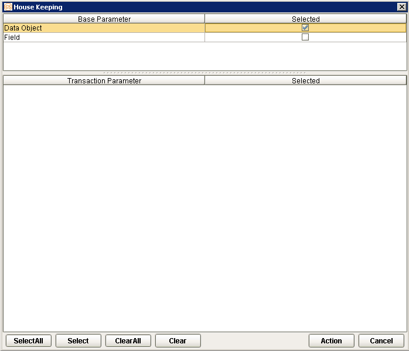
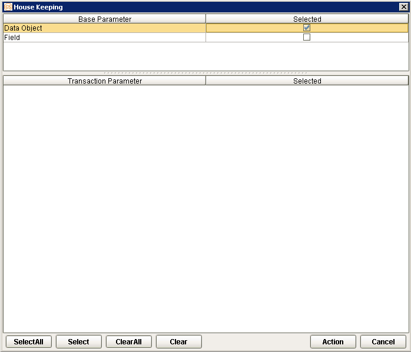
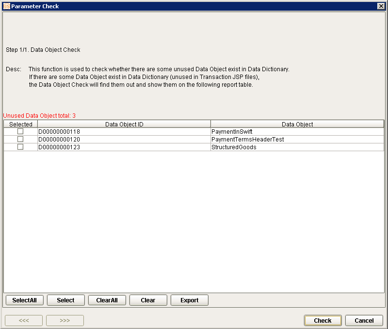
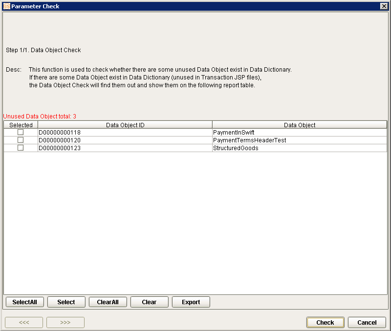
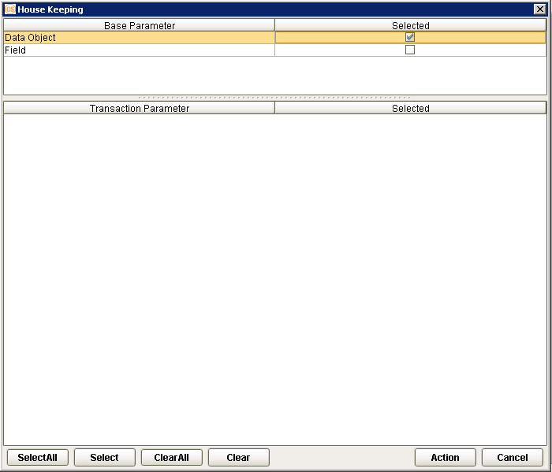
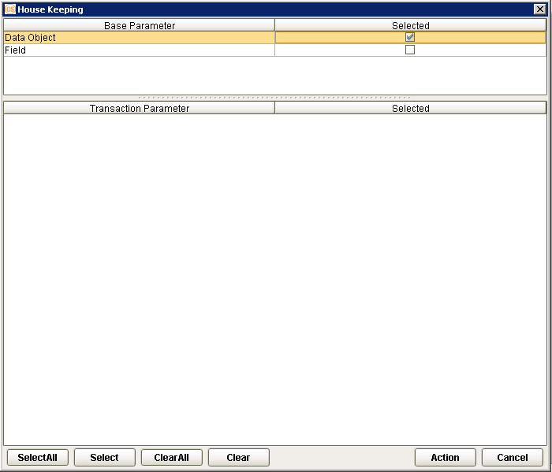

EEV415 Multi-Language Reference (Pandoc Multiple File Conversion)
 {width="8.692361111111111in” height="11.375in”}
{width="8.692361111111111in” height="11.375in”}
+———————————————————————–+
| EXIMBILLS © Trade Finance System |
| |
| Eximbills Enterprise System Version 4.1.5 |
| |
| Multi-Language Reference |
| |
| February 2021 |
+———————————————————————–+
| Copyright 2021 © China Systems Corporation |
| |
| All Rights Reserved |
| |
| This document is protected by United States Copyright Law and may |
| contain Trade Secrets Information which is proprietary to China |
| Systems Corporation. No part of this document may be copied, |
| photocopied, reproduced, translated, distributed, or reduced to any |
| electronic medium or machine-readable form without prior consent in |
| writing from China Systems Corporation. The information in this |
| document may be used only under the terms and conditions of separate |
| China Systems Corporation license agreements. |
| |
| Information is subject to change without notice. China Systems |
| Corporation makes no warranties, either expressed or implied, with |
| respect to the software herein described as to its quality, |
| performance, including, without limitations to, its fitness for any |
| particular purpose. |
| |
| This document may not reflect total system capability at any |
| subsequent date as a result of development. It is also possible that |
| it may contain references to facilities not available on your |
| computer system. Such references should not be construed to mean that |
| these facilities will necessarily be made available on all types of |
| computer hardware or in all user locations. |
| |
| China Systems Corporation accepts no responsibility or liability for |
| any damages or loss of business or revenue due to the use of this |
| document. |
| |
| All trademarks, registered trademarks and trade names mentioned in |
| this document are the sole property of their respective holders. |
+———————————————————————–+
| ORDER MORE EXIMBILLS DOCUMENTATION |
| |
| Additional copies of Documentation are available for purchase from |
| China Systems Corporation or through your local EXIMBILLS Support |
| Office. |
+———————————————————————–+
|  {width="0.7604166666666666in” |
| height="0.75in”} |
| |
| CHINA SYSTEMS CORPORATION |
| |
| Comments may be addressed to: |
| |
| corporatedocs@chinasystems.com |
| |
| China Systems Corporation Ltd. |
| |
| Corner House, 20 Parliament Street |
| |
| Hamilton HM12 |
| |
| Bermuda |
+———————————————————————–+
{width="0.7604166666666666in” |
| height="0.75in”} |
| |
| CHINA SYSTEMS CORPORATION |
| |
| Comments may be addressed to: |
| |
| corporatedocs@chinasystems.com |
| |
| China Systems Corporation Ltd. |
| |
| Corner House, 20 Parliament Street |
| |
| Hamilton HM12 |
| |
| Bermuda |
+———————————————————————–+
Table of Contents
Preparing the EE Utility Files 16
Navigating the EE Utility Interface 22
Generating the XML Parameter Files 56
The Multi-Language Functionality 79
Defining the Language Records 80
Defining the Business Unit Language 85
Selecting the Supported Languages 89
Configuring the Multi-Language Settings 94
Using the Multi-Language Tools 134
Assigning the Default Language Setting of an EE User 156
The Default Language in the EE Browser 164
Special Multi-Language Settings 168
ML Settings in the Error Message Maintenance Function 169
EE Documentation Library
EE Documentation Library
The EE Documentation Library lists all available manuals that serve as references on the use of the Eximbills Enterprise system. The documents are categorized into three groups: Core System Manuals, EE Utility References, and Installation Guides.
Core System Manuals
The EE Core System manuals provide information on the setup and configuration of various EE parameters, as well as the implementation of supplementary functionalities supported by the system.
Archiving and Recovery
This manual is a reference to the Archive and Recovery functionality of the EE system. Discussions include the required parameter settings for configuring the relevant functions, as well as examples of how this functionality is used in transaction processes. The archiving functions discussed in this manual are Archive Data, Inquire Archived Data, Restore Archived Data, Delete Archived Data, and End of Month functions.
BIRT Report Engine
This manual discusses the requirements and processes involved in applying the built-in BIRT report engine of EE to build transaction functions that generate BIRT reports and documents. Other functionalities, such as configuring a report batch function and defining rules to attach documents to an outgoing e-mail, are covered as well.
Building a Module
This manual is designed to help new users of EE plan, organize, control, and successfully carry out the implementation of the system. It provides a general description of the different features of EE that enable every bank to build and design business modules according to its processing requirements. This manual discusses how a custom business module in EE can be built and adapted. It includes step-by-step procedures on how to build a module as well as an overview of runtime transaction processing.
Charges and Commissions Reference
This document provides extensive discussions on the setup and usage of the Charges and Commissions component of EE. Instructions include setting up parameters, defining the relevant standing data, and using charge-specific calculation methods.
Data Objects
This manual describes in detail the steps and procedures required in building and utilizing a data object, which is a logical object that has its own attributes and calculation rules. Instructions on customizing the DO screen interface, navigating the data object screen, and using data objects in transaction processes are also provided.
eLOAN Transaction Module
This document provides extensive discussions on EE’s eLOAN sub-system. Topics include eLOAN functions from the eLOAN Transaction Module and the EE Standing Data Module.
FAQs
This document addresses commonly asked questions about the EE system. This includes answers to issues related to browser-side processing, EE Utility, EE database, Security Manager, and other issues that may arise while operating and configuring settings within the EE environment. Some system features and capabilities are discussed as well.
GAPI Integration
This manual is a comprehensive reference guide on setting up the required parameters for sending and receiving GAPI messages. It includes instructions on the configuration of related functionalities and auxiliary operations, as well as discussions on actual transaction processing.
Limit Management Module
This document provides extensive discussions on the Limits sub-system of EE. The manual is divided into two parts:
-
The first part discusses all the browser functions of the Limit Management module.
-
The second part discusses the required parameter settings to integrate Limits settings and data with a business module.
Limit Transaction Module
This document provides extensive discussions on running and using the functions of the Limit Transaction module.
Log Settings
This manual provides instructions on defining EE log settings and configuring parameters to set up log functions. Generating logs on different modes and checking the different log directories are discussed as well.
Multi-Entity Reference
This manual is a guide to the multi-entity structure of the EE system. This includes a discussion on the composition of the system in relation to this structure. EE also supports the use of a single and default domain; a supplementary section is provided for this.
Multi-Language Reference
This manual provides instructions on defining language records and configuring the multi-language settings in the EE Utility and EE browser. With this multi-language functionality, users are able to access the EE system in their preferred language.
Payment Component Reference
This document provides extensive discussions on the setup and usage of the different Payment component types: Payment Terms, Payment Schedule, Payment Instruction Dealer, and Payment Dealer. Topics include parameter settings and Payment-specific calculation methods.
Security Manager
This manual is a comprehensive guide to security management in the EE system. As such, it includes instructions on the setup of user profiles, user functions, business units, business unit functions, user and business unit assignments, and other security-related operations.
Service Level Agreement Reference
This document is a reference to the Service Level Agreement (SLA) functionality of EE the system, which pertains to a group of settings that control the flow of transaction steps and processes. It is divided into two major sections: Basic Data, for the functions used in the creation and maintenance of SLA standing data; and System Operations, for the functions used in SLA enquiry, business task initialization, and end time adjustments. A sample SLA process is also provided.
Standing Data Module
This document discusses the functions for the standing data of the EE system. Among these are rate descriptions, exchange rates, interest rates, account numbers, currencies, weekend data, holiday data, clauses, reference number rules, authorization standing data, and time zone data. Descriptions, input details, and processing steps are included in the function discussions.
Supplementary Functions
This manual is a reference in configuring the parameter settings to define special or supplementary EE functionalities such as the Compliance Check and invoice uploading features.
SWIFT Configuration
This document provides extensive discussions on the primary components required in defining SWIFT messages: the SWIFT template and the SWIFT message rule. The complete parameter settings and external configurations required for enabling EE to exchange messages with the SWIFT network are detailed in comprehensive procedures. This manual is supplemented with sections on SWIFT-related system parameters and miscellaneous functions.
System Administration Functions
This manual is a reference for Super Administrator users of the EE Utility in the configuration and maintenance of the EE environment. Sections of this reference include instructions on the use of specific User Manage and Parameter Manage functions.
System Maintenance Module
This document discusses the functions provided in the System Maintenance module of the EE system. This includes sections on the maintenance processes for daily operations, authorization rule settings, EDI messages, SWIFT messages, XML messages, log files, and documents.
System Reference
This manual is a reference for the following elements provided in the EE Utility for parameterization: security parameters, system parameters, components, server side system methods, calculation methods, and XML Generator items.
Version Control
This manual discusses the settings in maintaining the different versions of parameters.
EE Utility References
The EE Utility set of reference manuals is a guide on the use of the EE Utility Workbench, or simply EE Utility. These references discuss every function or feature of the EE Utility and provide instructions on how to operate or use the function in relation to operating and maintaining the EE system and processing a business transaction.
A manual is provided for each major function group of the EE Utility: User Manage, Parameter Manage, System Function, Transaction Function, and Maintenance.
{width="0.3298611111111111in” height="0.3298611111111111in”}NOTE: The TSU Parameter Manage function group is comprised of functions used for configuring, managing and maintaining parameters for the TSU (or Open Account) module. For information on the TSU module, refer to the EE Baseline TSU documentation.
EE Utility Reference: User Manager Functions
This manual is a comprehensive guide for the Administrator and Operator user on the use and configuration of the functions belonging to the User Manage function group of the EE Utility. This includes functions for user profiles and audit logs.
EE Utility Reference: Parameter Manager Functions
This manual is a reference on the use and configuration of the functions that belong to the Parameter Manage function group of the EE Utility and that are accessible to Administrator and Operator users. These are system-wide functions used for creating and maintaining system parameters, components, and calculation rules, among others.
EE Utility Reference: System Functions
This manual includes information on the configuration of the functions belonging to the System Function group of the EE Utility. The functions in this group are used to maintain settings that facilitate system-wide tasks and operations; among these are function groups, output devices, protocol managers, and STP settings.
EE Utility Reference: Transaction Functions
This manual provides discussions on the configuration of the functions belonging to the Transaction Function group of the EE Utility. These functions are used for defining and setting up the actual business parameters of transaction functions.
EE Utility Reference: Maintenance Functions
This manual is a comprehensive guide on the use and configuration of the functions belonging to the Maintenance function group of the EE Utility. These functions are used for maintaining the tables, fields, and files that are used in the EE Utility.
Installation Guide
An EE installation guide is a reference on the installation and setup processes of the EE system on a specific application server and database.
Installation Guide WAS 9.0 - Oracle 12c
This is a reference for installing the EE system on WebSphere Application Server Version 9.0.5.5, with an Oracle 12c database. This includes detailed instructions on configuring the components that are required to successfully run EE.
{#section .CS-ChapterTitle}
Introduction
-
system overview
-
manual overview
System Overview
The trade finance industry typically involves transactions between two or more countries. Although English is the most commonly used medium in trade finance transactions, certain banks may prefer using their own language in trade operations.
The multi-language (ML) functionality of the Eximbills Enterprise (EE) system allows users to translate the elements on the EE browser into their preferred language.
Manual Overview
[Purpose]{.underline}
This manual provides instructions on defining language records and configuring the multi-language settings in the EE Utility and EE browser. With this multi-language functionality, users are able to access the EE system in their preferred language.
[Audience]{.underline}
This document is a reference specifically for, but not limited to, the following users:
-
Consultants tasked to configure the multi-language settings of an EE environment
-
Browser users in charge of modifying user profiles
[Prerequisites]{.underline}
This document is written with the assumption that the reader has sufficient knowledge of building EE modules and using EE Utility functions.
Suggested titles before reading this manual are as follows:
-
EE Security Manager
-
EE Utility References
{width="0.3298611111111111in” height="0.3298611111111111in”}NOTE: Some features discussed in this manual have been tested and documented based on an older system version. Unless otherwise specified, the overall functionality is the same when recreated in the current version.
Using the EE Utility
-
Running the EE Utility
-
Generating the XML Parameter Files
-
Building an EE Module
Running the EE Utility
The Eximbills Enterprise Utility Workbench, or EE Utility, is the main tool for building parameters in EE.
Preparing the EE Utility Files
Along with the installation files, the EE Utility folder is provided with every EE system release.
Prior to using the EE Utility, do the following:
-
Copy the EE Utility folder to the local drive.
-
Edit the CSUtility.bat file in the EE Utility folder, define the \BIN path of the JDK program.
**[EXAMPLE:
]{.underline}**path = C:\Program Files\Java\jdk1.8.0_181\bin
i. For EE Version 2.5.0 and higher, the EE Utility supports JDBC thin. It is therefore not required to define the path of the Oracle database. For more information on JDBC Thin, refer to this discussion: EE Utility Supports JDBC Thin.
ii. The Java Standard Edition Development Kit (JDK) program must already be installed on the EE machine prior to the configuration of EE Utility. For detailed information on installing EE, refer to the EE Installation guides.
+———————————————————————–+
| []{#jdbcthin .anchor}EE Utility Supports JDBC Thin |
| |
| The EE Utility supports JDBC thin. As such, it can connect to the |
| Oracle database without adding information in the Net Manager. These |
| are the advantages of using JDBC thin: |
| |
| - The EE Utility may be used to connect to the Oracle database |
| without installing an Oracle client. |
| |
| - The EE Utility may be used to connect to the same database name |
| on a different server. |
| |
| [EXAMPLE:]{.underline} |
| |
| The EE Utility may connect to both EEDB EE400, and EEDB |
| 192.168.0.246, which have similar database names but are on different |
| servers. It is not required to delete one database from the Net |
| Manager before being able to use the other database with the same |
| name. |
| |
|  {width="4.85in” height="4.094444444444444in” |
| } |
| ——————————————————————- |
| — |
+———————————————————————–+
{width="4.85in” height="4.094444444444444in” |
| } |
| ——————————————————————- |
| — |
+———————————————————————–+
Accessing the EE Utility
The main program for accessing the EE Utility program is the CSUtility.bat file. This file is located in the EE Utility folder.
Do the following …
+———————–+———————–+———————–+ | 1. Run the | | {width="3.5in” | | program to access | | height="2.11875in”} | | the EE Utility. | | | | | | | | **[NOTE:]{.underline} | | | | ** | | | | | | | | i. A shortcut to | | | | the CSUtility batch | | | | file can be created | | | | on the desktop for | | | | easy access. | | | | | | | | ii. The EE Utility | | | | folder provides | | | | external tools that | | | | can be used for | | | | simulating or | | | | testing parameters | | | | and other | | | | parameter-related | | | | settings. These | | | | tools or functions | | | | are contained in | | | | the externalTools | | | | sub-folder. Refer | | | | to the EE FAQs | | | | manual for more | | | | information. | | | +=======================+=======================+=======================+ | | | | +———————–+———————–+———————–+ | 2. The logon window | | {width="3.5in” | | is displayed. | | height="2.34513888888 | | | | 8889in”} | | To define the | | | | database information, | | | | click on the Profile | | | | button. | | | +———————–+———————–+———————–+ | | | | +———————–+———————–+———————–+ | 3. In the Database | | {width="3.5in” | | box that is | | height="3.40277777777 | | displayed, specify | | 77777in”} | | the required | | | | database | | | | information and | | | | click on the Save | | | | button. | | | +———————–+———————–+———————–+ | | | | +———————–+———————–+———————–+ | 4. A confirmation | | {width="3.5in” | | displayed. Click on | | height="3.40277777777 | | the OK button. | | 77777in”} | +———————–+———————–+———————–+ | | | | +———————–+———————–+———————–+ | [NOTE: | | {width="3.5in” | | | | height="1.3375in”} | | This new data source | | | | setting is saved in | | | | the UserInfo.xml file | | | | in the EE Utility | | | | directory. | | | +———————–+———————–+———————–+ | | | | +———————–+———————–+———————–+ | 5. The relevant | | {width="3.5in” | | password may then | | height="2.36180555555 | | be specified for | | 55557in”} | | logging on the EE | | | | Utility. | | | | | | | | The default usernames | | | | and passwords for the | | | | EE Utility users are | | | | as follows: | | | | | | | | - Super | | | | Administrator | | | | | | | | > User ID: | | | | > super_admin | | | | > | | | | > Password: baselines | | | | | | | | - Administrator | | | | | | | | > User ID: Admin | | | | > Password: 11111111 | | | | | | | | - Operator | | | | | | | | > User ID: operator | | | | > | | | | > Password: 11111111 | | | | | | | | [NOTE: | | | | ]{.underline} | | | | | | | | For information on | | | | defining EE Utility | | | | user profiles, refer | | | | to the EE System | | | | Administration | | | | Functions manual. | | | +———————–+———————–+———————–+ | | | | +———————–+———————–+———————–+ | 6. The EE Utility | | {width="3.5in” | | displayed. | | height="1.85694444444 | | | | 44445in”} | +———————–+———————–+———————–+ | | | | +———————–+———————–+———————–+ | 7. A function is | | {width="3.5in” | | the relevant | | height="1.85694444444 | | function group and | | 44445in”} | | clicking on the | | | | function name. | | | | | | | | **[NOTE:]{.underline} | | | | ** | | | | | | | | A user may only | | | | access and utilize | | | | the functions | | | | assigned to him. For | | | | more information, | | | | refer to the EE | | | | Utility Reference – | | | | User Manager | | | | Functions manual and | | | | the EE System | | | | Administration | | | | Functions | | | | documentation. | | | +———————–+———————–+———————–+
Navigating the EE Utility Interface
When the EE Utility is accessed, the functions that may be used for setting up parameters are displayed. Additionally, shortcuts are provided for these.
The EE Utility interface also provides ways by which parameters can be created, edited, deleted, or linked to other operations: menu bar, toolbar buttons, and popup menu.
Figure 2. 1 The EE Utility Interface
i. A function is only displayed, and its corresponding button or menu option enabled, if the user has been given the right to access this function. Some options and functions are only available to Super Administrator users, while others are only accessible to Administrator and Operator users. For information on creating EE Utility users and assigning function access rights to users, refer to the EE System Administration Functions documentation.
ii. For information on EE Utility functions, refer to the EE Utility Reference manuals.
####### EE Utility Functions
The parameter-setting functions in the EE Utility are organized together into several function groups. The available function groups and their corresponding functions are as follows.
User Manage Function Group
This function group consists of functions used for defining and modifying business unit settings, data source settings, and EE Utility user settings. These functions are:
-
Business Unit Config
-
Data Source Manage
-
User Manage
-
Audit Log
Parameter Manage Function Group
This function group is comprised of functions used for managing and maintaining system parameters, components, calculation rules, and language settings. These are used in EE, for both system and transaction processes. These functions are:
-
Component Manage
-
Calculation
-
Language Configuration
-
System Parameter
-
Security Parameters
-
Server
-
User Class
-
User Authority
System Function Group
This function group is comprised of functions used for facilitating system-wide tasks and operations such as domains, output devices, and STP settings. These functions are:
-
Function Group
-
Domain
-
Output Device
-
Protocol Manager
-
STP Setting
-
Say Total
TSU Parameter Manage Function Group
This function group is comprised of functions used for configuring, managing, and maintaining parameters (e.g., JS and STP settings) for the TSU module. These functions are:
-
TSU Server Setting
-
Thread JS Setting
-
Relation Mapping
-
TSU STP Setting
Transaction Function Group
This function group is comprised of functions used for defining the actual business parameters of transaction functions; these facilitate the maintenance and processes of the business transaction modules. These functions are:
-
Accounting Rules
-
Amount/ Rate Format
-
Archiving
-
Attribute
-
Batch Manage
-
Catalog
-
Clause
-
Event Driven
-
EDI Form
-
Export Setting
-
Form
-
GAPI Setting
-
Get CUBK
-
Get DO DATA
-
Message Broker Setting
-
Module & Event
-
Report Template
-
Screen
-
Server Side JS
-
Subtask
-
SWIFT
-
System Maintain
-
Message Mapping
-
Transfer To
-
Transaction Function
Maintenance Function Group
This function group is comprised of functions used for maintaining the tables, fields, and files that are used in the EE Utility. These functions are:
-
DB Dictionary
-
Multi Language
-
Field Conversion
-
XML Generator
-
Copy Module
-
Data Dictionary Mapping
-
Version Control Tool
-
Handwriting Editor
-
SOA Setting
-
SOA Calculation
####### Menu Bar
The options on the menu bar are shortcuts to both the common and specific functions and tasks of the system.

Figure 2. 2 Menu Bar
Menu Description
+———————–+———————–+———————–+ | File | | The available options | | | | from the File menu | | | | are: | | | | | | | | - New: This is used | | | | for creating a | | | | new parameter or | | | | rule. | | | | | | | | - Save: This is | | | | used for saving a | | | | created or | | | | modified setting. | | | | | | | | - Close Function: | | | | This is used for | | | | closing the | | | | current function | | | | window. | | | | | | | | - Log Off: This is | | | | used for logging | | | | off the system | | | | without exiting | | | | the EE Utility. | | | | | | | | - Exit: This is | | | | used for closing | | | | the system window | | | | and exiting the | | | | EE Utility. |
+=======================+=======================+=======================+ | | | | +———————–+———————–+———————–+ | Edit | | The available options | | | | from the Edit menu | | | | are: | | | | | | | | - Add: This is used | | | | for adding a | | | | setting for the | | | | selected function | | | | or parameter. | | | | | | | | - Delete: This is | | | | used for deleting | | | | or removing an | | | | existing setting. | | | | | | | | - Edit: This is | | | | used for editing | | | | or modifying an | | | | existing setting. | | | | | | | | - Copy: This is | | | | used for copying | | | | or duplicating a | | | | selected setting. | | | | | | | | - Lock: This is | | | | used for locking | | | | a parameter or | | | | setting to a | | | | specific user. | | | | | | | | - Unlock: This is | | | | used for | | | | unlocking a | | | | locked parameter | | | | or setting. | | | | | | | | - Find: This is | | | | used for finding | | | | a specific | | | | setting. | | | | | | | | **[NOTE:]{.underline} | | | | ** | | | | | | | | The Lock option is | | | | used to manually lock | | | | a parameter or | | | | setting to prevent | | | | another user from | | | | modifying it at the | | | | same time. A locked | | | | parameter may only be | | | | unlocked either | | | | manually (through the | | | | Unlock option) by the | | | | same user that locked | | | | the transaction, or | | | | automatically by the | | | | system, once the same | | | | user closes, cancels, | | | | or saves the | | | | parameter setting. | | | | | | | | Refer to the | | | | succeeding sections | | | | of this manual for | | | | more information on | | | | the process of | | | | locking and unlocking | | | | a parameter. | +———————–+———————–+———————–+ | | | | +———————–+———————–+———————–+ | Function | | The available options | | | | from the Function | | | | menu are: | | | | | | | | - User Manage, | | | | which displays | | | | options for | | | | running User | | | | Manager | | | | functions. | | | | | | | | | | | | | | | | - Parameter Manage, | | | | which displays | | | | options for | | | | running Parameter | | | | Manager | | | | functions. | | | | | | | | | | | | | | | | - System Function, | | | | which displays | | | | options for | | | | running System | | | | functions. | | | | | | | | - TSU Parameter | | | | Manage, which | | | | displays options | | | | for running TSU | | | | Parameter Manager | | | | functions. | | | | | | | | | | | | | | | | - Transaction | | | | Function, which | | | | displays options | | | | for running | | | | Transaction | | | | functions. | | | | | | | | | | | | | | | | - Maintenance, | | | | which displays | | | | options for | | | | running | | | | Maintenance | | | | functions. | +———————–+———————–+———————–+ | | | | +———————–+———————–+———————–+ | Tools | | The available options | | | | from the Tools menu | | | | are: | | | | | | | | - Toolbar: When | | | | this option is | | | | selected, the | | | | basic toolbar is | | | | displayed on the | | | | EE Utility | | | | window. | | | | | | | | - Function Toolbar: | | | | When this option | | | | is selected, the | | | | function toolbar | | | | is displayed on | | | | the EE Utility | | | | window. | | | | | | | | [NOTE: | | | | ]{.underline} | | | | | | | | The Set User Profile | | | | DB Info option is | | | | reserved for future | | | | use. | +———————–+———————–+———————–+ | | | | +———————–+———————–+———————–+ | House Keeping | | The available option | | | | from the House | | | | Keeping menu is: | | | | | | | | - Housekeeping: | | | | This option is | | | | used to check | | | | whether there are | | | | unused data | | | | objects (unused | | | | in transaction | | | | JSP files and DO | | | | relation | | | | settings) and | | | | fields (unused in | | | | transaction JSP | | | | files, | | | | transaction | | | | tables, and data | | | | objects) that are | | | | listed in the | | | | Data Dictionary. | | | | | | | | *[NOTE]{.underline} | | | | *: | | | | | | | | Refer to the | | | | following [Clearing | | | | Junk | | | | Data](#clearingjunkda | | | | ta) | | | | section. | +———————–+———————–+———————–+ | | | | +———————–+———————–+———————–+
+———————–+———————–+———————–+ | Help | | The available option | | | | from the Help menu | | | | is: | | | | | | | | - About Eximbill: | | | | When this option | | | | is selected, the | | | | About Eximbills | | | | Enterprise window | | | | is displayed. | | | | This window | | | | indicates the | | | | version | | | | information of | | | | EE. | | | | | | | | [NOTE: | | | | ]{.underline} | | | | | | | | The Help Topics – | | | | Content Help option | | | | is reserved for | | | | future use. | | | | | | | | {width="4.15972222 | | | | 2222222in” | | | | height="3.42569444444 | | | | 44444in”} | +———————–+———————–+———————–+
+———————————————————————–+
| []{#clearingjunkdata .anchor}Clearing Junk Data |
| |
| The data created and utilized when setting parameters in the EE |
| Utility are stored in the EE database, whether these are used or not. |
| Fields and data objects, for instance, may be attached or added to |
| module tables through the DB Dictionary function. Some of these |
| fields and data objects are not used anymore, or are not used at all. |
| These, however, still consume storage space in the database. To make |
| sure the database is cleared of unnecessary or unused data, the House |
| Keeping function in the EE Utility is provided. |
| |
| The House Keeping function, which is accessed through the menu bar, |
| is basically used to check for unused fields and data objects and |
| export the check result. Specifically, it checks if the following |
| types of parameters − including DO relation and function relation |
| settings − have been defined for fields and data objects: |
| |
| - Accounting Rules |
| |
| - Amount/Rate Format |
| |
| - Calculation - Common Data Object |
| |
| - Calculation - Common Data Object - DO's Field's Method |
| |
| - Calculation - Common Data Object - DO's Method |
| |
| - Calculation - Function Level - DO Relation |
| |
| - Calculation - Function Level - DO Relation - DO's Field's |
| Method |
| |
| - Calculation - Function Level - DO Relation - DO's Method |
| |
| - Calculation - Function Level - Field Method |
| |
| - Calculation - Function Level - Field Method - DO Field |
| |
| - Calculation - Function Level - Function Methods |
| |
| - Calculation - Function Level - Function Methods - DO Field |
| |
| - Confirm Server Side JS |
| |
| - Initial Server Side JS |
| |
| - Transaction Server Side JS |
| |
| - Get DO Data |
| |
| - Transaction Function Extension Screen |
| |
| - Transaction Function Ignore DO Field |
| |
| - Transfer To |
| |
| - DB Dictionary Module Table |
| |
| To use the House Keeping function: |
| |
| 1. Log on the EE Utility and run the House Keeping function from the |
| menu bar. |
| |
| ——————————————————————- |
| —————— |
|  {width="4.839583333333334in” height="1.0659 |
| 722222222223in”} |
| ——————————————————————- |
| —————— |
| |
| 2. The House Keeping window is displayed. Mark the corresponding |
| flag of the data type to be checked (e.g., Data Object). Click on |
| the Action button. |
| |
| ——————————————————————- |
| —————— |
| {width="4.679166666666666in” height="3.6034 |
| 722222222224in”} |
| ——————————————————————- |
| —————— |
| |
| 3. In the Parameter Check window that is displayed, click on the |
| Check button to proceed. The system starts filtering the data. |
| |
| ——————————————————————- |
| —————– |
|
{width="4.839583333333334in” height="1.0659 |
| 722222222223in”} |
| ——————————————————————- |
| —————— |
| |
| 2. The House Keeping window is displayed. Mark the corresponding |
| flag of the data type to be checked (e.g., Data Object). Click on |
| the Action button. |
| |
| ——————————————————————- |
| —————— |
| {width="4.679166666666666in” height="3.6034 |
| 722222222224in”} |
| ——————————————————————- |
| —————— |
| |
| 3. In the Parameter Check window that is displayed, click on the |
| Check button to proceed. The system starts filtering the data. |
| |
| ——————————————————————- |
| —————– |
|  {width="4.858333333333333in” height="4.1229 |
| 16666666667in”} |
| ——————————————————————- |
| —————– |
| |
| 4. All unused data objects are listed in the grid. The total number |
| of retrieved data is also displayed on the Parameter Check |
| window. |
| |
| > {width="4.603472222222222in” |
| > height="3.9055555555555554in”} |
| |
| [NOTE:]{.underline} |
| |
| i. If the system displays several results, the Previous and Next |
| buttons may be used to view the items. These buttons are enabled |
| only when both Data Object and Field are selected for the House |
| Keeping process. |
| |
| ii. If a data object is added to a table or if a calculation |
| setting is defined for a data object, the data object is not |
| included in the list of unused data in the Parameter Check window. |
| |
| 5. To export the result of the check, mark the corresponding flag of |
| the results to be included in the generated file and click on the |
| Export button. The Select All, Select, Clear All, and Clear |
| buttons may also be used accordingly. |
| |
| {width="4.170138888888889in” height="3.5375 |
| in”} |
| ——————————————————————- |
| —— |
| |
| 6. Specify the path where the file is to be exported. |
| |
| ——————————————————————- |
| ——————- |
|
{width="4.858333333333333in” height="4.1229 |
| 16666666667in”} |
| ——————————————————————- |
| —————– |
| |
| 4. All unused data objects are listed in the grid. The total number |
| of retrieved data is also displayed on the Parameter Check |
| window. |
| |
| > {width="4.603472222222222in” |
| > height="3.9055555555555554in”} |
| |
| [NOTE:]{.underline} |
| |
| i. If the system displays several results, the Previous and Next |
| buttons may be used to view the items. These buttons are enabled |
| only when both Data Object and Field are selected for the House |
| Keeping process. |
| |
| ii. If a data object is added to a table or if a calculation |
| setting is defined for a data object, the data object is not |
| included in the list of unused data in the Parameter Check window. |
| |
| 5. To export the result of the check, mark the corresponding flag of |
| the results to be included in the generated file and click on the |
| Export button. The Select All, Select, Clear All, and Clear |
| buttons may also be used accordingly. |
| |
| {width="4.170138888888889in” height="3.5375 |
| in”} |
| ——————————————————————- |
| —— |
| |
| 6. Specify the path where the file is to be exported. |
| |
| ——————————————————————- |
| ——————- |
|  {width="3.1791666666666667in” height="2.197 |
| 9166666666665in”} |
| ——————————————————————- |
| ——————- |
| |
| 7. The Unused Data Object XLS file is generated on the specified |
| path. This file contains information on the unused data objects. |
| |
| ——————————————————————- |
| —————— |
|
{width="3.1791666666666667in” height="2.197 |
| 9166666666665in”} |
| ——————————————————————- |
| ——————- |
| |
| 7. The Unused Data Object XLS file is generated on the specified |
| path. This file contains information on the unused data objects. |
| |
| ——————————————————————- |
| —————— |
|  {width="4.236111111111111in” height="3.9430 |
| 555555555555in”} |
| ——————————————————————- |
| —————— |
| |
| 8. Click on the Cancel button once done. |
| |
| {width="3.1791666666666667in” |
| height="2.1979166666666665in”} |
| |
| 9. A confirmation message is displayed. Click on the Yes button to |
| exit the Parameter Check window. |
| |
| [EXAMPLE:]{.underline} |
| |
| In the DB Dictionary function, create a data object entity: DOC_DO. |
| |
| ——————————————————————- |
| —————– |
|
{width="4.236111111111111in” height="3.9430 |
| 555555555555in”} |
| ——————————————————————- |
| —————— |
| |
| 8. Click on the Cancel button once done. |
| |
| {width="3.1791666666666667in” |
| height="2.1979166666666665in”} |
| |
| 9. A confirmation message is displayed. Click on the Yes button to |
| exit the Parameter Check window. |
| |
| [EXAMPLE:]{.underline} |
| |
| In the DB Dictionary function, create a data object entity: DOC_DO. |
| |
| ——————————————————————- |
| —————– |
|  {width="4.829861111111111in” height="3.2076 |
| 38888888889in”} |
| ——————————————————————- |
| —————– |
| |
| Add this DO to a module table and reformat the table. |
| |
| > {width="4.802083333333333in” |
| > height="2.51875in”} |
| |
| – |
| – |
| |
| Run the House Keeping function and select Data Object in the House |
| Keeping window. |
| |
| {width="3.7263888888888888in” height="3.188 |
| 888888888889in”} |
| ——————————————————————- |
| —————— |
| |
| The system only displays the data objects that are not used in any |
| parameter setting. |
| |
| ——————————————————————- |
| —————— |
| {width="3.763888888888889in” height="3.1979 |
| 166666666665in”} |
| ——————————————————————- |
| —————— |
| |
| Delete the data object from the module table and run the Reformat |
| process. |
| |
| ——————————————————————- |
| —————— |
|
{width="4.829861111111111in” height="3.2076 |
| 38888888889in”} |
| ——————————————————————- |
| —————– |
| |
| Add this DO to a module table and reformat the table. |
| |
| > {width="4.802083333333333in” |
| > height="2.51875in”} |
| |
| – |
| – |
| |
| Run the House Keeping function and select Data Object in the House |
| Keeping window. |
| |
| {width="3.7263888888888888in” height="3.188 |
| 888888888889in”} |
| ——————————————————————- |
| —————— |
| |
| The system only displays the data objects that are not used in any |
| parameter setting. |
| |
| ——————————————————————- |
| —————— |
| {width="3.763888888888889in” height="3.1979 |
| 166666666665in”} |
| ——————————————————————- |
| —————— |
| |
| Delete the data object from the module table and run the Reformat |
| process. |
| |
| ——————————————————————- |
| —————— |
|  {width="4.613194444444445in” height="2.4243 |
| 055555555557in”} |
| ——————————————————————- |
| —————— |
| |
| Run the House Keeping function again. The system displays the data |
| objects that are not used. Since the DOC_DO data object has been |
| removed from the DOCS_MASTER table and no other settings are defined |
| for it, it is included in the list. |
| |
| {width="4.283333333333333in” |
| height="3.6319444444444446in”} |
+———————————————————————–+
{width="4.613194444444445in” height="2.4243 |
| 055555555557in”} |
| ——————————————————————- |
| —————— |
| |
| Run the House Keeping function again. The system displays the data |
| objects that are not used. Since the DOC_DO data object has been |
| removed from the DOCS_MASTER table and no other settings are defined |
| for it, it is included in the list. |
| |
| {width="4.283333333333333in” |
| height="3.6319444444444446in”} |
+———————————————————————–+
#######
####### Toolbar Buttons
There are two kinds of toolbars in the EE Utility: the basic toolbar and the function toolbar.
Basic Toolbar
The following standard buttons are available on the EE Utility window. These are used for performing the basic and common tasks of the system.

Figure 2. 3 Basic Toolbar Buttons
Button Description
+———————–+———————–+———————–+ | {width="0.25486111 | | for creating a new | | 11111111in” | | parameter or rule. | | height="0.25486111111 | | | | 11111in”} | | | | New | | | +=======================+=======================+=======================+ | | | | +———————–+———————–+———————–+ | {width="0.25486111 | | for adding a setting | | 11111111in” | | for the selected | | height="0.25486111111 | | function or | | 11111in”} | | parameter. | | Add | | | +———————–+———————–+———————–+ | | | | +———————–+———————–+———————–+ | {width="0.25486111 | | for saving a created | | 11111111in” | | or modified setting. | | height="0.25486111111 | | | | 11111in”} | | | | Save | | | +———————–+———————–+———————–+ | | | | +———————–+———————–+———————–+ | {width="0.23611111 | | for editing or | | 11111111in” | | modifying an existing | | height="0.25486111111 | | setting. | | 11111in”} | | | | Edit | | | +———————–+———————–+———————–+ | | | | +———————–+———————–+———————–+ | {width="0.25486111 | | for copying or | | 11111111in” | | duplicating a | | height="0.25486111111 | | selected setting. | | 11111in”} | | | | Copy | | | +———————–+———————–+———————–+ | | | | +———————–+———————–+———————–+ | {width="0.25486111 | | for deleting or | | 11111111in” | | removing an existing | | height="0.25486111111 | | setting. | | 11111in”} | | | | Delete | | | +———————–+———————–+———————–+ | | | | +———————–+———————–+———————–+ | {width="0.25486111 | | for finding an | | 11111111in” | | existing setting. | | height="0.25486111111 | | | | 11111in”} | | | | Find | | | +———————–+———————–+———————–+ | | | | +———————–+———————–+———————–+ | {width="0.27361111 | | for locking a | | 111111114in” | | parameter or setting | | height="0.27361111111 | | to a specific user. | | 111114in”} | | | | Lock | | See also the Lock | | | | option in the Edit | | | | menu. | +———————–+———————–+———————–+ | | | | +———————–+———————–+———————–+ | {width="0.30208333 | | for unlocking a | | 33333333in” | | locked parameter or | | height="0.30208333333 | | setting. | | 33333in”}Unlock | | | | | | See also the Unlock | | | | option in the Edit | | | | menu. | +———————–+———————–+———————–+ | | | | +———————–+———————–+———————–+ | {width="0.25486111 | | for closing the | | 11111111in” | | current function | | height="0.25486111111 | | window. | | 11111in”} | | | | **Close ** | | | +———————–+———————–+———————–+ | | | | +———————–+———————–+———————–+ | {width="0.25486111 | | reserved for future | | 11111111in” | | use. | | height="0.23611111111 | | | | 11111in”} | | | | Help Topic | | | +———————–+———————–+———————–+ | | | | +———————–+———————–+———————–+ | {width="0.25486111 | | for displaying the | | 11111111in” | | version information | | height="0.25486111111 | | of Eximbills | | 11111in”}About | | Enterprise. | | Eximbills | | | +———————–+———————–+———————–+
Function Toolbar
The buttons on this toolbar are shortcuts to some of the functions that are in the Function Group lists of the EE Utility window. The buttons may also be accessed from the Function menu on the menu bar.

Figure 2. 4 Function Toolbar Buttons
Button Description
+———————–+———————–+———————–+ | {width="0.25486111 | | for accessing the | | 11111111in” | | System Parameter | | height="0.25486111111 | | function. The | | 11111in”} | | function may also be | | Set System | | accessed from the | | Parameter | | Parameter Manage | | | | group under the | | | | Function menu. | +=======================+=======================+=======================+ | | | | +———————–+———————–+———————–+ | {width="0.25486111 | | for accessing the | | 11111111in” | | Component Manage | | height="0.25486111111 | | function. The | | 11111in”} | | function may also be | | Manage Component | | accessed from the | | | | Parameter Manage | | | | group under the | | | | Function menu. | +———————–+———————–+———————–+ | | | | +———————–+———————–+———————–+ | {width="0.25486111 | | for accessing the | | 11111111in” | | Calculation function. | | height="0.25486111111 | | The function may also | | 11111in”} | | be accessed from the | | Calculation | | Parameter Manage | | | | group under the | | | | Function menu. | +———————–+———————–+———————–+ | | | | +———————–+———————–+———————–+ | {width="0.25486111 | | for accessing the | | 11111111in” | | Module & Event | | height="0.25486111111 | | function. The | | 11111in”} | | function may also be | | Module/Event | | accessed from the | | Configuration | | Transaction Function | | | | group under the | | | | Function menu. | +———————–+———————–+———————–+ | | | | +———————–+———————–+———————–+ | {width="0.25486111 | | for accessing the | | 11111111in” | | Transaction Function. | | height="0.25486111111 | | The function may also | | 11111in”} | | be accessed from the | | Transaction | | Transaction Function | | Function | | group under the | | Configuration | | Function menu. | +———————–+———————–+———————–+ | | | | +———————–+———————–+———————–+ | {width="0.23611111 | | for accessing the | | 11111111in” | | Form function. The | | height="0.25486111111 | | function may also be | | 11111in”} | | accessed from the | | Form Set | | Transaction Function | | | | group under the | | | | Function menu. | +———————–+———————–+———————–+ | | | | +———————–+———————–+———————–+ | {width="0.23611111 | | for accessing the | | 11111111in” | | Accounting Rules | | height="0.25486111111 | | function. The | | 11111in”} | | function may also be | | Accounting Rule | | accessed from the | | Setting | | Transaction Function | | | | group under the | | | | Function menu. | +———————–+———————–+———————–+ | | | | +———————–+———————–+———————–+ | {width="0.25486111 | | for accessing the | | 11111111in” | | Field Conversion | | height="0.25486111111 | | function. The | | 11111in”} | | function may also be | | Field Conversion | | accessed from the | | | | Maintenance group | | | | under the Function | | | | menu. | +———————–+———————–+———————–+ | | | | +———————–+———————–+———————–+ | {width="0.23611111 | | for accessing the Get | | 11111111in” | | CUBK function. The | | height="0.25486111111 | | function may also be | | 11111in”} | | accessed from the | | Get Data | | Transaction Function | | | | group under the | | | | Transaction Function | | | | menu. | +———————–+———————–+———————–+ | | | | +———————–+———————–+———————–+ | {width="0.23611111 | | for accessing the | | 11111111in” | | Output Device | | height="0.25486111111 | | function. The | | 11111in”} | | function may also be | | Output Device | | accessed from the | | | | System Function group | | | | under the Function | | | | menu. | +———————–+———————–+———————–+ | | | | +———————–+———————–+———————–+ | {width="0.25486111 | | for accessing the | | 11111111in” | | Function Group | | height="0.25486111111 | | function. The | | 11111in”} | | function may also be | | Function Group | | accessed from the | | | | System Function group | | | | under the Function | | | | menu. | +———————–+———————–+———————–+ | | | | +———————–+———————–+———————–+ | {width="0.25486111 | | for accessing the | | 11111111in” | | Clause function. The | | height="0.25486111111 | | function may also be | | 11111in”} | | accessed from the | | **Clause ** | | Transaction Function | | | | group under the | | | | Function menu. | +———————–+———————–+———————–+ | | | | +———————–+———————–+———————–+ | {width="0.23611111 | | for accessing the | | 11111111in” | | Protocol Manager | | height="0.25486111111 | | function. The | | 11111in”} | | function may also be | | Protocol Manager | | accessed from the | | | | System Function group | | | | under the Function | | | | menu. | +———————–+———————–+———————–+ | | | | +———————–+———————–+———————–+ | {width="0.25486111 | | for accessing the | | 11111111in” | | GAPI Setting | | height="0.25486111111 | | function. The | | 11111in”}GAPI | | function may also be | | Setting | | accessed from the | | | | Transaction Function | | | | group under the | | | | Function menu. | +———————–+———————–+———————–+ | | | | +———————–+———————–+———————–+ | {width="0.23611111 | | for accessing the STP | | 11111111in” | | Setting function. The | | height="0.25486111111 | | function may also be | | 11111in”} | | accessed from the | | STP Setting | | System Function group | | | | under the Function | | | | menu. | +———————–+———————–+———————–+ | | | | +———————–+———————–+———————–+ | {width="0.23611111 | | for accessing the | | 11111111in” | | Message Broker | | height="0.25486111111 | | Setting function. The | | 11111in”} | | function may also be | | Message Broker | | accessed from the | | Setting | | Transaction Function | | | | group under the | | | | Function menu. | +———————–+———————–+———————–+ | | | | +———————–+———————–+———————–+ | {width="0.23611111 | | for accessing the | | 11111111in” | | Amount/Rate Format | | height="0.25486111111 | | function. The | | 11111in”} | | function may also be | | Amount Format | | accessed from the | | Setting | | Transaction Function | | | | group under the | | | | Function menu. | +———————–+———————–+———————–+ | | | | +———————–+———————–+———————–+ | {width="0.25486111 | | reserved for future | | 11111111in” | | use. | | height="0.25486111111 | | | | 11111in”} | | | | Report | | | +———————–+———————–+———————–+ | | | | +———————–+———————–+———————–+ | {width="0.25486111 | | for accessing the | | 11111111in” | | Transfer To function. | | height="0.25486111111 | | The function may also | | 11111in”} | | be accessed from the | | Transfer To | | Transaction Function | | | | group under the | | | | Function menu. | +———————–+———————–+———————–+ | | | | +———————–+———————–+———————–+ | {width="0.25486111 | | for accessing the DB | | 11111111in” | | Dictionary function. | | height="0.25486111111 | | The function may also | | 11111in”} | | be accessed from the | | DB Dictionary | | Maintenance group | | | | under the Function | | | | menu. | +———————–+———————–+———————–+ | | | | +———————–+———————–+———————–+ | {width="0.25486111 | | for accessing the XML | | 11111111in” | | Generator function. | | height="0.25486111111 | | The function may also | | 11111in”} | | be accessed from the | | XML Generator | | Maintenance group | | | | under the Function | | | | menu. | +———————–+———————–+———————–+ | | | | +———————–+———————–+———————–+ | {width="0.25486111 | | for fixing any of the | | 11111111in” | | following issues: | | height="0.25486111111 | | | | 11111in”} | | - Fix DO Template | | Fix Data | | Screen | | | | | | | | - Delete DO | | | | Template Missing | | | | Fields | | | | | | | | - Delete Duplicated | | | | Records | | | | | | | | - Clean Unused Rule | | | | | | | | - Correct SWIFT | | | | Message Rule Name | | | | Id and Module | | | | | | | | - Clean Amount Rule | +———————–+———————–+———————–+ | | | | +———————–+———————–+———————–+ | {width="0.26388888 | | to migrate error | | 88888889in” | | messages and time | | height="0.29236111111 | | zone settings from | | 11111in”} | | the Meta database | | Migrate to Web | | into the Security | | | | database. | | | | | | | | **[NOTE:]{.underline} | | | | ** | | | | | | | | i. Refer to the EE | | | | Security Manager | | | | manual for more | | | | information on | | | | migrating error | | | | messages in the | | | | Security Manager. | | | | | | | | ii. Refer to the | | | | EE Standing Data | | | | Module manual for | | | | more information on | | | | migrating time zone | | | | settings in the | | | | Standing Data | | | | Module. | +———————–+———————–+———————–+ | | | | +———————–+———————–+———————–+ | {width="0.25486111 | | for accessing the | | 11111111in” | | Business Unit Config | | height="0.22638888888 | | function. The | | 88889in”} | | function may also be | | Business Unit | | accessed from the | | | | User Manage group | | | | under the Function | | | | menu. | +———————–+———————–+———————–+ | | | | +———————–+———————–+———————–+ | {width="0.23611111 | | for accessing the | | 11111111in” | | User Manage function. | | height="0.25486111111 | | The function may also | | 11111in”} | | be accessed from the | | User Manager | | User Manage group | | | | under the Function | | | | menu. | +———————–+———————–+———————–+ | | | | +———————–+———————–+———————–+
 {width="0.27361111111111114in” height="0.2833333333333333in”} Data Source Manager This function is used for accessing the Data Source Manage function. The function may also be accessed from the User Manage group under the Function menu.
{width="0.27361111111111114in” height="0.2833333333333333in”} Data Source Manager This function is used for accessing the Data Source Manage function. The function may also be accessed from the User Manage group under the Function menu.
####### Popup Menu
Inside a function or configuration window, options may be provided in the form of a popup menu. This menu is displayed by right-clicking on the relevant window section or on the relevant setting.

Figure 2. 5 Popup Menu
In a popup window, the following options may be made available:
Option Description
+———————–+———————–+———————–+ | New | | This is used for | | | | creating a new | | | | parameter or rule. | +=======================+=======================+=======================+ | | | | +———————–+———————–+———————–+ | Add | | This is used for | | | | adding a setting for | | | | the selected function | | | | or parameter. | +———————–+———————–+———————–+ | | | | +———————–+———————–+———————–+ | Save | | This is used for | | | | saving a created or | | | | modified setting. | +———————–+———————–+———————–+ | | | | +———————–+———————–+———————–+ | Edit | | This is used for | | | | editing or modifying | | | | an existing setting. | +———————–+———————–+———————–+ | | | | +———————–+———————–+———————–+ | Copy | | This is used for | | | | copying or | | | | duplicating a | | | | selected setting. | +———————–+———————–+———————–+ | | | | +———————–+———————–+———————–+ | Lock | | This is used for | | | | manually locking a | | | | parameter or setting | | | | to a specific user. | +———————–+———————–+———————–+ | | | | +———————–+———————–+———————–+ | Unlock | | This is used for | | | | manually unlocking a | | | | locked parameter or | | | | setting. | +———————–+———————–+———————–+ | | | | +———————–+———————–+———————–+ | Delete | | This is used for | | | | deleting or removing | | | | an existing setting. | +———————–+———————–+———————–+ | | | | +———————–+———————–+———————–+ | Find | | This is used to | | | | search for an | | | | existing setting. | | | | | | | | Refer to the | | | | succeeding Smart | | | | Search | | | | discussion for more | | | | information. | +———————–+———————–+———————–+ | | | | +———————–+———————–+———————–+ | Combine | | This is used in a | | | | multi-entity | | | | environment. | | | | Bank-country groups | | | | are added to or | | | | removed from a domain | | | | that is assigned to a | | | | specific parameter | | | | type. | | | | | | | | Refer to the EE | | | | Multi-Entity | | | | documentation for | | | | more information. | +———————–+———————–+———————–+ | | | | +———————–+———————–+———————–+ | **Help ** | | This is reserved for | | | | future use. | +———————–+———————–+———————–+
#######
####### Other EE Utility Features
The EE Utility provides the following additional features:
-
Smart Search
-
Function Name Fields
[]{#_Toc5790052 .anchor}Smart Search
Rule names and methods may be easily searched using the Smart Search feature of the EE Utility. This feature may be accessed by right-clicking on the appropriate window and selecting the Find option from the popup menu that is displayed, or by pressing ctrl+F on the keyboard.
Figure 2. 6 Smart Search

Figure 2. 7 Find Window
The following items are provided in the Find window for searching for particular texts.
Item Description
+———————–+———————–+———————–+ | Column Name | | This field is used to | | | | specify the type of | | | | name to be searched | | | | (e.g., rule name, | | | | method name, etc.). | | | | Available values may | | | | be selected from the | | | | dropdown list, or, | | | | may be manually | | | | specified. | +=======================+=======================+=======================+ | | | | +———————–+———————–+———————–+ | Column Value | | This field is used to | | | | specify the actual | | | | text to be searched | | | | based on the Column | | | | Name (e.g., | | | | IPLC_Issuance). | | | | Available values may | | | | be selected from the | | | | dropdown list, or, | | | | may be manually | | | | specified. | +———————–+———————–+———————–+ | | | | +———————–+———————–+———————–+ | Direction | | Mark the direction or | | | | checking sequence of | | | | the search: Forward, | | | | Backward, or | | | | Wrap_search. | | | | | | | | If the search is to | | | | be performed in any | | | | direction (i.e, | | | | within all available | | | | content for | | | | searching), mark the | | | | Wrap_search option. | +———————–+———————–+———————–+ | | | | +———————–+———————–+———————–+ | Case Sensitive | | Mark this flag if the | | | | search must consider | | | | the letter case | | | | (i.e., uppercase or | | | | lowercase) in which | | | | the word that is | | | | specified in the | | | | Column Value field is | | | | defined. | +———————–+———————–+———————–+ | | | | +———————–+———————–+———————–+
+———————–+———————–+———————–+ | Whole Word | | Mark this flag if the | | | | search must consider | | | | the whole word | | | | specified in the | | | | Column Value field. | | | | | | | | **[NOTE:]{.underline} | | | | ** | | | | | | | | If this flag is not | | | | marked, the text | | | | specified in the | | | | Column Value field | | | | may be searched as a | | | | part of a whole word | | | | (e.g., prefix, | | | | suffix). | +———————–+———————–+———————–+
This feature may be applied in the following functions.
+————————————-+———————+ | Function | Search Box Type | +=====================================+=====================+ | User Manage Function Group | | +————————————-+———————+ | Business Unit Config | Tree | +————————————-+———————+ | | Table | +————————————-+———————+ | DataSource Manage | Table | +————————————-+———————+ | | Drop Down Box | +————————————-+———————+ | | Tree | +————————————-+———————+ | | List | +————————————-+———————+ | User Manage | List | +————————————-+———————+ | | Table | +————————————-+———————+ | Audit Log | Drop Down box | +————————————-+———————+ | | Table | +————————————-+———————+ | Parameter Manage Function Group | | +————————————-+———————+ | Component Manager | Drop Down box | +————————————-+———————+ | | Table | +————————————-+———————+ | | Tree | +————————————-+———————+ | Calculation | Drop Down box | +————————————-+———————+ | | Table | +————————————-+———————+ | | Tree | +————————————-+———————+ | Language Configuration | Drop Down box | +————————————-+———————+ | | Table | +————————————-+———————+ | Security Parameters | Table | +————————————-+———————+ | | Drop Down Box | +————————————-+———————+ | Server | Table | +————————————-+———————+ | | Drop Down Box | +————————————-+———————+ | System Parameter | Table | +————————————-+———————+ | | Tree | +————————————-+———————+ | | Drop Down box | +————————————-+———————+ | User Class | Tree | +————————————-+———————+ | | Table | +————————————-+———————+ | | Drop Down box | +————————————-+———————+ | User Authority | Table | +————————————-+———————+ | | Tree | +————————————-+———————+ | System Function Group | | +————————————-+———————+ | Function Group | Tree | +————————————-+———————+ | | Table | +————————————-+———————+ | | Drop Down Box | +————————————-+———————+ | Domain | Tree | +————————————-+———————+ | | Table | +————————————-+———————+ | | List | +————————————-+———————+ | Output Device | Drop Down Box | +————————————-+———————+ | | Table | +————————————-+———————+ | | List | +————————————-+———————+ | | Tree | +————————————-+———————+ | Protocol Manager | Table | +————————————-+———————+ | | Drop Down Box | +————————————-+———————+ | STP Setting | Tree | +————————————-+———————+ | Say Total | Drop Down Box | +————————————-+———————+ | | Table | +————————————-+———————+ | Transaction Function Group | | +————————————-+———————+ | Accounting Rules | Drop Down Box | +————————————-+———————+ | | Table | +————————————-+———————+ | | Tree | +————————————-+———————+ | Amount/Rate Format | Tree | +————————————-+———————+ | | Drop Down Box | +————————————-+———————+ | | Table | +————————————-+———————+ | Archiving | Drop Down Box | +————————————-+———————+ | | Table | +————————————-+———————+ | | Tree | +————————————-+———————+ | Attribute | Tree | +————————————-+———————+ | | Table | +————————————-+———————+ | | Drop Down Box | +————————————-+———————+ | Batch Manager | Tree | +————————————-+———————+ | | Drop Down Box | +————————————-+———————+ | | Table | +————————————-+———————+ | Catalog | Tree | +————————————-+———————+ | | Table | +————————————-+———————+ | Clause | Tree | +————————————-+———————+ | | Table | +————————————-+———————+ | | List | +————————————-+———————+ | Event Driven | Tree | +————————————-+———————+ | | Drop Down Box | +————————————-+———————+ | | Table | +————————————-+———————+ | EDI Form | Tree | +————————————-+———————+ | Form | Tree | +————————————-+———————+ | | Table | +————————————-+———————+ | | Drop Down Box | +————————————-+———————+ | | List | +————————————-+———————+ | GAPI Setting | Tree | +————————————-+———————+ | | Table | +————————————-+———————+ | | Drop Down Box | +————————————-+———————+ | Get CUBK | Table | +————————————-+———————+ | | Tree | +————————————-+———————+ | | Drop Down Box | +————————————-+———————+ | Get DO DATA | Tree | +————————————-+———————+ | | Table | +————————————-+———————+ | | Drop Down Box | +————————————-+———————+ | Message Broker Setting | Table | +————————————-+———————+ | | Drop Down Box | +————————————-+———————+ | Module&Event | Table | +————————————-+———————+ | | Drop Down Box | +————————————-+———————+ | Report Template | Tree | +————————————-+———————+ | | Table | +————————————-+———————+ | | Drop Down Box | +————————————-+———————+ | Screen | Tree | +————————————-+———————+ | | Table | +————————————-+———————+ | Server Side JS | Tree | +————————————-+———————+ | | Table | +————————————-+———————+ | | Drop Down Box | +————————————-+———————+ | Subtask | Tree | +————————————-+———————+ | | Table | +————————————-+———————+ | | List | +————————————-+———————+ | | Drop Down Box | +————————————-+———————+ | | Tree | | | | | SWIFT | | +————————————-+———————+ | | Table | +————————————-+———————+ | | Drop Down Box | +————————————-+———————+ | System Maintain | Table | +————————————-+———————+ | Message Mapping | Table | +————————————-+———————+ | | List | +————————————-+———————+ | Transfer To | Table | +————————————-+———————+ | | Tree | +————————————-+———————+ | | Drop Down Box | +————————————-+———————+ | Transaction Function | Tree | +————————————-+———————+ | | Table | +————————————-+———————+ | | List | +————————————-+———————+ | | Drop Down Box | +————————————-+———————+ | Maintenance Function Group | | +————————————-+———————+ | DB Dictionary | Tree | +————————————-+———————+ | | Table | +————————————-+———————+ | | List | +————————————-+———————+ | | Drop Down Box | +————————————-+———————+ | Multi Language | Table | +————————————-+———————+ | | Tree | +————————————-+———————+ | | Drop Down Box | +————————————-+———————+ | Field Conversion | Tree | +————————————-+———————+ | | Table | +————————————-+———————+ | | Drop Down Box | +————————————-+———————+ | XML Generator | Table | +————————————-+———————+ | | List | +————————————-+———————+ | Copy Module | Tree | +————————————-+———————+ | | Table | +————————————-+———————+ | | Drop Down Box | +————————————-+———————+ | Data Dictionary Mapping | Table | +————————————-+———————+ | Version Control Tools | Table | +————————————-+———————+ | | List | +————————————-+———————+ | | Drop Down Box | +————————————-+———————+ | SOA Setting | Tree | +————————————-+———————+ | | Table | +————————————-+———————+ | | Drop Down Box | +————————————-+———————+ | SOA Calculation | Tree | +————————————-+———————+ | | List | +————————————-+———————+ | | Table | +————————————-+———————+ | | Drop Down Box | +————————————-+———————+ | Hand Writing Editor | Table | +————————————-+———————+ | | List | +————————————-+———————+ | | Tree | +————————————-+———————+
Function Name Fields
The EE Utility does not permit adding a space on Name fields in functions (i.e., the space key cannot be used when a rule name is added manually). If, on the other hand, the rule name is specified by using the Paste functionality, the system displays a message confirming if the spaces are to be automatically removed. DCS Amount

Figure 2. 8 Confirmation Message
The following are the functions that include a Name field:
-
Calculation - Common Setting, Function Level, and Screen Level
-
Function Relation Editor
-
Function Group
-
Domain - Default Domain and Parameter-Type Domain
-
Mail
-
Protocol Manager
-
Accounting Rules
-
Archiving
-
Attribute
-
Batch Manager
-
Catalog
-
Clause
-
Event Driven
-
EDI Form
-
Form
-
GAPI Setting
-
Get CUBK
-
Get DO DATA
-
Message Broker Setting
-
Module&Event
-
Report Template
-
Screen
-
Server Side JS
-
Subtask
-
SWIFT
-
Message Mapping
-
Transfer To
-
Transaction Function
-
Multi Language
-
Version Control Tool
-
Hand Writing Editor
Generating the XML Parameter Files
The created parameters and business logic are stored in the database as Meta data. For this Meta data to be accessible to the application server and the web server, it has to be converted to XML – the format used for the communication between the client and the server.
The parameter files are typically generated through the XML Generator function manually. Except for the Calculation parameter, the files generated from the XML Generator function are all XML files. The generated files for the Calculation parameter are JavaScript files.
The AUTO_GENERATE_XML_CONTROLER System Parameter
How the parameter files are generated depends on the value of the AUTO_GENERATE_XML_CONTROLER system parameter.

Figure 2. 9 AUTO_GENERATE_XML_CONTROLER
Defined through the System Parameter function, this may be set to any of these values:
-
Generate and Ask: After a parameter setting or configuration is saved, the system displays a message confirming whether the XML files are to be generated. Upon user confirmation, the XML files are automatically generated.
-
Not Generate: The XML files are not automatically generated; these must be manually generated through the XML Generator function.
-
Generate and Not Need Ask: The system automatically generates the XML files after a parameter or configuration is saved.
If no value (null) is defined for this system parameter, the system does not automatically generate the XML files. This is essentially the same as the Not Generate parameter value.
Manual Generation of Parameter Files
To generate the XML parameter files manually:
Do the following …
+———————–+———————–+———————–+ | 1. Log on the EE | | {width="3.5in” | | Administrator or | | height="2.34513888888 | | Operator user with | | 8889in”} | | rights to the XML | | | | Generator function. | | | +=======================+=======================+=======================+ | | | | +———————–+———————–+———————–+ | 2. The EE Utility | | {width="3.5in” | | displayed. | | height="1.85694444444 | | | | 44445in”} | | Run the XML Generator | | | | function from the | | | | Maintenance function | | | | group. | | | +———————–+———————–+———————–+ | | | | +———————–+———————–+———————–+ | 3. The XML | | {width="3.5in” | | window is | | height="1.85694444444 | | displayed. | | 44445in”} | | | | | | When there are newly | | | | defined or modified | | | | parameters, the Meta | | | | Data to XML window is | | | | also displayed. It | | | | lists these | | | | parameters for easy | | | | selection. In this | | | | case, the parameter | | | | can be selected from | | | | this window and the | | | | Apply button clicked. | | | | Afterwards, proceed | | | | to Step 5. | | | | | | | | Alternatively, the | | | | Meta data or | | | | parameter can be | | | | manually selected | | | | from the main XML | | | | Generator window. In | | | | this case, click on | | | | the Close button of | | | | the Meta Data to XML | | | | window and proceed to | | | | Step 4. | | | +———————–+———————–+———————–+ | | | | +———————–+———————–+———————–+ | 4. Double-click on | | {width="3.5in” | | parameter type from | | height="1.85694444444 | | the XML Generator | | 44445in”} | | window. | | | +———————–+———————–+———————–+ | | | | +———————–+———————–+———————–+ | 5. Depending on the | | {width="3.5in” | | type, an XML | | height="1.85694444444 | | configuration | | 44445in”} | | window may be | | | | displayed. In other | | | | cases, the process | | | | directly proceeds | | | | from Step 3 or 4 to | | | | Step 6. | | | | | | | | If a configuration | | | | window is displayed, | | | | specify the exact or | | | | any additional | | | | setting required to | | | | generate the relevant | | | | XML files. When the | | | | specifications are | | | | defined, click on the | | | | Save button. | | | +———————–+———————–+———————–+ | | | | +———————–+———————–+———————–+ | 6. A message is | | {width="3.5in” | | confirming if the | | height="1.15416666666 | | XML files are to be | | 66666in”} | | generated on the | | | | system path. | | | +———————–+———————–+———————–+ | | | | +———————–+———————–+———————–+ | **[NOTE:]{.underline} | | {width="3.5in” | | | | height="1.85694444444 | | The default path of | | 44445in”} | | the XML files is | | | | defined through the | | | | GEN_XML_ROOTPATH | | | | Utility Workbench | | | | system parameter. | | | | This system parameter | | | | is configured through | | | | the System Parameter | | | | function from the | | | | Parameter Manage | | | | function group. | | | +———————–+———————–+———————–+ | | | | +———————–+———————–+———————–+ | 7. To save the XML | | {width="3.5in” | | path, click on the | | height="3.24236111111 | | Yes button. | | 11112in”} | | | | | | To specify another | | | | path, click on the No | | | | button. In the Save | | | | dialog box that is | | | | displayed, browse for | | | | the path and click on | | | | the Save button. | | | +———————–+———————–+———————–+ | | | | +———————–+———————–+———————–+ | 8. When the | | {width="3.5in” | | are generated, the | | height="0.92430555555 | | system displays a | | 55556in”} | | confirmation | | | | message. | | | +———————–+———————–+———————–+ | | | | +———————–+———————–+———————–+ | Click on the Detail | | {width="3.5in” | | paths of the | | height="3.0in”} | | generated XML files. | | | | | | | | [NOTE: | | | | ]{.underline} | | | | | | | | To hide this | | | | information, click on | | | | the Hide button. | | | +———————–+———————–+———————–+ | | | | +———————–+———————–+———————–+ | **[NOTE:]{.underline} | | {width="3.5in” | | | | height="2.11875in”} | | Check the indicated | | | | paths to see the | | | | generated XML files. | | | +———————–+———————–+———————–+
Building an EE Module
An EE module represents a product or service of a bank. In trade finance, for example, an EE module may be created to automate the processes involved in an Import LC transaction. A transaction module consists of transaction functions, each with its own properties and attributes. The settings that pertain to modules and functions are called parameters; these are configured through the EE Utility.
{width="0.3298611111111111in”
height="0.3298611111111111in”}NOTE:
i. One of the preliminary steps in creating a module is the GAP analysis. It is through this that the requirements of the transaction are determined; this includes the required fields for data input and the types of output that must be generated. Once the business requirements are identified and the required preparations are made, the project team may then start building the modules.
ii. For detailed information on building a module, refer to the EE Building a Module documentation.
{#section-4 .CS-head2}
Basic Steps
The general processes involved in the creation of a transaction module are as follows.
Steps in Building a Module
+———————–+———————–+———————–+ | **[Access the EE | | {width="3.5in” | | ** | | height="2.34513888888 | | | | 8889in”} | | Log on the EE Utility | | | | as an Administrator | | | | or Operator type of | | | | user. Only these | | | | types of users can | | | | access the EE Utility | | | | for building | | | | parameters. | | | | | | | | User profiles are set | | | | up through the User | | | | Manager function in | | | | the User Manage | | | | function group. | | | +=======================+=======================+=======================+ | | | | +———————–+———————–+———————–+ | *[Create the module | | {width="3.4951 | | events.]{.underline} | | 38888888889in” | | * | | height="1.81805555555 | | | | 55555in”} | | **Configure the | | | | module and the | | | | projected events that | | | | manage the | | | | transaction flow | | | | within the module. ** | | | | | | | | This is set up | | | | through the Module | | | | and Event function in | | | | the Transaction | | | | Function group. | | | +———————–+———————–+———————–+ | | | | +———————–+———————–+———————–+ | *[Create the | | {width="3.5in” | | tables.]{.underline} | | height="1.85694444444 | | * | | 44445in”} | | | | | | There are several | | | | types of tables. In | | | | building a module, it | | | | is mandatory to | | | | create the module’s | | | | Master and Ledger | | | | tables. | | | | | | | | This is set up | | | | through the DB | | | | Dictionary function | | | | in the Maintenance | | | | function group. | | | +———————–+———————–+———————–+ | | | | +———————–+———————–+———————–+ | *[Define the EE | | Add the relevant | | fields for the | | fields to the | | transaction | | transaction tables | | tables.]{.underline} | | through the Reformat | | * | | tab of the DB | | | | Dictionary function. | | Define the fields and | | | | field properties for | | {width="3.5in” | | tables. | | height="1.85694444444 | | | | 44445in”} | | This is set up | | | | through the DB | | | | Dictionary function | | | | in the Maintenance | | | | function group. | | | +———————–+———————–+———————–+ | | | | +———————–+———————–+———————–+ | *[Assign the | | Through the Reformat | | transaction tables to | | tab of the DB | | the relevant | | Dictionary function: | | schema.]{.underline} | | | | * | | 1. Assign the | | | | transaction tables | | Assign the created | | to the relevant | | transaction tables to | | schema. | | a particular schema. | | | | The types of schemas | | {width="3.5in” | | and EXIMUSER. Once | | height="1.85694444444 | | done, perform the | | 44445in”} | | Reformat process to | | | | import the data to | | | | the database. | | | | | | | | This is set up | | | | through the DB | | | | Dictionary function | | | | in the Maintenance | | | | function group. | | | +———————–+———————–+———————–+ | | | | +———————–+———————–+———————–+ | | | 2. Perform the | | | | Reformat process to | | | | commit the changes | | | | made to the | | | | database. The | | | | Reformat Preview | | | | window provides an | | | | overview of the | | | | outcome of the | | | | Reformat process. | | | | | | | | {width="3.5in” | | | | height="1.85694444444 | | | | 44445in”} | +———————–+———————–+———————–+ | | | | +———————–+———————–+———————–+ | [Create the | | Run Transaction | | functions.]{.underlin | | Function and select | | e} | | the module in which | | | | the function is to be | | Create the functions | | included. Create the | | to be used. | | new transaction | | | | function and define | | This is set up | | its properties. | | through the | | | | Transaction Function | | {width="3.5in” | | Function group. | | height="1.85694444444 | | | | 44445in”} | +———————–+———————–+———————–+ | | | | +———————–+———————–+———————–+ | *[Design or modify | | {width="3.5in” | | create the | | height="2.09027777777 | | transaction function | | 77777in”} | | screen.]{.underline} | | | | * | | | | | | | | The JSP files can be | | | | modified using an | | | | HTML editor. Style | | | | sheets can be applied | | | | to these files for | | | | uniformity of look | | | | and feel. | | | +———————–+———————–+———————–+ | | | | +———————–+———————–+———————–+
+———————–+———————–+———————–+ | *[Create the | | Screen: * | | transaction | | | | parameters.]{.underli | | A Screen rule | | ne} | | pertains to a | | | | parameter setting | | Each transaction is | | that points to the | | associated with | | JSP file (s) to be | | specific parameters | | used as an actual | | or properties such as | | transaction screen. | | screens, attributes, | | Define the Screen | | catalogs, accounting | | rule through the | | vouchers, SWIFT | | Screen function. | | forms, GAPI settings, | | | | and Transfer To | | {width="3.5in” | | | | height="1.85694444444 | | These are set up in | | 44445in”} | | separate functions in | | | | the Transaction | | | | Function group. | | | +=======================+=======================+=======================+ | | | | +———————–+———————–+———————–+ | | | Attribute: | | | | | | | | Attributes are | | | | business components | | | | that regulate the | | | | behavior of functions | | | | in processing | | | | transactions. Define | | | | the Attribute rule | | | | through the Attribute | | | | function. | | | | | | | | {width="3.5in” | | | | height="1.85694444444 | | | | 44445in”} | +———————–+———————–+———————–+ | | | | +———————–+———————–+———————–+ | | | Catalog: | | | | | | | | A catalog is a set of | | | | instructions | | | | utilizing query | | | | criteria that are to | | | | be applied in the | | | | retrieval of specific | | | | records for | | | | transaction record | | | | inquiry or | | | | processing. If the | | | | transaction function | | | | requires a catalog, | | | | create the Catalog | | | | rule through the | | | | Catalog function. | | | | | | | | {width="3.5in” | | | | height="1.85694444444 | | | | 44445in”} | +———————–+———————–+———————–+ | | | | +———————–+———————–+———————–+ | [Attach the | | Access the relevant | | transaction | | module, event, and | | parameters to the | | transaction function. | | function.]{.underline | | Attach the relevant | | } | | parameter rules | | | | accordingly. | | The created | | | | parameters must be | | {width="3.5in” | | relevant function. | | height="1.85694444444 | | | | 44445in”} | | This is set up | | | | through the | | | | Transaction Function | | | | in the Transaction | | | | Function group. | | | +———————–+———————–+———————–+ | | | | +———————–+———————–+———————–+ | [Create a function | | 1. Create a | | group:]{.underline} | | function group | | | | through the | | Organize the | | Function Group | | functions of a module | | function. | | in separate logical | | | | function groups. | | {width="3.5in” | | This is set up | | height="1.85694444444 | | through the Function | | 44445in”} | | Group function in the | | | | System Function | | 2. Assign the | | group. | | relevant functions | | | | to this function | | | | group. | | | | | | | | {width="3.5in” | | | | height="1.85694444444 | | | | 44445in”} | +———————–+———————–+———————–+ | | | | +———————–+———————–+———————–+ | [Define the | | {width="3.5in” | | validations.]{.underl | | height="1.85694444444 | | ine} | | 44445in”} | | | | | | Apply the | | | | calculation and | | | | validation rules to | | | | manage the behavior | | | | and population of | | | | fields, and to | | | | determine the | | | | validity of entries | | | | for the transaction. | | | | | | | | This is set up | | | | through the | | | | Calculation function | | | | in the Parameter | | | | Manage function | | | | group. | | | +———————–+———————–+———————–+ | | | | +———————–+———————–+———————–+ | [Define the | | Clauses: | | settings for the | | | | transaction | | These pertain to | | input.]{.underline} | | descriptions, | | | | details, narratives, | | Certain parameters | | or message contents | | pertain to the input | | that are commonly or | | of data into the | | frequently used in | | transaction. | | the transactions. | | | | | | Settings for Field | | 1. Define the | | Conversion, | | Clause settings | | Amount/Rate Format, | | through the Clause | | Clauses, Get CUBK, | | function. | | Reference Number, and | | | | Data Objects are | | {width="3.5in” | | functions in the EE | | height="1.85694444444 | | Utility. | | 44445in”} | | | | | | | | {width="3.5in” | | | | height="1.85694444444 | | | | 44445in”} | +———————–+———————–+———————–+ | | | | +———————–+———————–+———————–+ | | | 2. Add the clause | | | | button to the | | | | relevant JSP | | | | screen. When | | | | clicked, this | | | | displays the Insert | | | | Clause window from | | | | which the clause | | | | templates can be | | | | selected and their | | | | values populated on | | | | to the | | | | corresponding | | | | transaction field. | | | | | | | | {width="3.5in” | | | | height="2.00694444444 | | | | 44446in”} | +———————–+———————–+———————–+ | | | | +———————–+———————–+———————–+ | | | 3. Through the | | | | Calculation | | | | function, define | | | | the rules for | | | | populating the | | | | clause field. | | | | | | | | {width="3.5in” | | | | height="1.85694444444 | | | | 44445in”} | +———————–+———————–+———————–+ | | | | +———————–+———————–+———————–+ | | | Reference Numbers: | | | | | | | | 1. In the EE | | | | browser, access the | | | | Add Reference | | | | Number function of | | | | the Standing Data | | | | module. Specify the | | | | relevant details | | | | for the Reference | | | | Number rule and | | | | confirm the | | | | setting. This | | | | setting must then | | | | be released by a | | | | user with Release | | | | rights for the | | | | changes to take | | | | effect. | | | | | | | | {width="3.5in” | | | | height="1.66736111111 | | | | 1111in”} | +———————–+———————–+———————–+ | | | | +———————–+———————–+———————–+ | | | 2. Through the | | | | Calculation | | | | function, define | | | | the methods for the | | | | automatic | | | | generation of | | | | reference numbers | | | | at runtime with the | | | | use of the | | | | Reference Number | | | | rule created | | | | earlier. | | | | | | | | {width="3.5in” | | | | height="1.85694444444 | | | | 44445in”} | +———————–+———————–+———————–+ | | | | +———————–+———————–+———————–+ | | | Dropdown List | | | | Values: | | | | | | | | Define the options or | | | | values of a field | | | | dropdown list through | | | | the Field Conversion | | | | function. | | | | | | | | {width="3.5in” | | | | height="1.85694444444 | | | | 44445in”} | +———————–+———————–+———————–+ | | | | +———————–+———————–+———————–+ | | | Lookup Buttons: | | | | | | | | A lookup button | | | | enables certain | | | | information from the | | | | database to be | | | | retrieved into | | | | specific fields on | | | | the transaction | | | | screen. | | | | | | | | 1. Define the rule | | | | through the Get | | | | CUBK function. | | | | | | | | {width="3.5in” | | | | height="1.85694444444 | | | | 44445in”} | +———————–+———————–+———————–+ | | | | +———————–+———————–+———————–+ | | | 2. Set up the Get | | | | CUBK button in the | | | | transaction JSP | | | | file, and define | | | | the relevant | | | | calculation rules. | | | | | | | | {width="3.5in” | | | | height="1.85694444444 | | | | 44445in”} | +———————–+———————–+———————–+ | | | | +———————–+———————–+———————–+ | | | Amount and Rate | | | | Format: | | | | | | | | Define the format of | | | | Amount and Rate | | | | fields through the | | | | Amount/Rate Format | | | | function. | | | | | | | | {width="3.5in” | | | | height="1.85694444444 | | | | 44445in”} | +———————–+———————–+———————–+ | | | | +———————–+———————–+———————–+ | *[Define the | | Forms: | | settings for the | | | | transaction | | Configure the form or | | output.]{.underline} | | document output | | * | | through the Form | | | | function. | | The settings for the | | | | output generated | | {width="3.5in” | | transaction process | | height="1.85694444444 | | are set up through | | 44445in”} | | the functions in the | | | | Transaction Function | | | | group. | | | +———————–+———————–+———————–+ | | | | +———————–+———————–+———————–+ | | | Accounting | | | | Vouchers: | | | | | | | | Define the details of | | | | the output voucher | | | | through the | | | | Accounting Rules | | | | function. | | | | | | | | {width="3.5in” | | | | height="1.85694444444 | | | | 44445in”} | +———————–+———————–+———————–+ | | | | +———————–+———————–+———————–+ | | | SWIFT Messages: | | | | | | | | Through the SWIFT | | | | function, create the | | | | SWIFT template | | | | message and other | | | | SWIFT settings. | | | | | | | | {width="3.5in” | | | | height="1.85694444444 | | | | 44445in”} | +———————–+———————–+———————–+ | | | | +———————–+———————–+———————–+ | [Attach the defined | | {width="3.5in” | | transaction | | height="1.85694444444 | | function.]{.underline | | 44445in”} | | } | | | | | | | | This is set up | | | | through the | | | | Transaction Function | | | | in the Transaction | | | | Function group. | | | +———————–+———————–+———————–+ | | | | +———————–+———————–+———————–+ | [Generate the XML | | {width="3.5in” | | | | height="1.85694444444 | | The parameters and | | 44445in”} | | business logic are | | | | stored in the | | | | database as Meta | | | | data. For this Meta | | | | data to be accessible | | | | to the application | | | | server and the web | | | | server, it has to be | | | | converted to XML – | | | | the format used to | | | | communicate between | | | | client and server. | | | | For the parameters to | | | | apply, the related | | | | XML files must be | | | | generated. | | | | | | | | Manual generation of | | | | the XML files is | | | | performed through the | | | | XML Generator | | | | function. | | | +———————–+———————–+———————–+ | | | | +———————–+———————–+———————–+ | [Assign the | | 1. Log on the EE | | function group to a | | browser as a Super | | user.]{.underline} | | Officer user with | | | | Create rights. | | Newly created | | | | function groups must | | {width="3.5in” | | business unit and the | | height="1.66736111111 | | relevant user in | | 1111in”} | | order to make the | | | | module, function | | | | group, and its | | | | functions available | | | | to the user. | | | | | | | | This is performed | | | | through the Security | | | | Manager in the EE | | | | browser. | | | +———————–+———————–+———————–+ | | | | +———————–+———————–+———————–+ | | | The system displays | | | | the Security Module. | | | | | | | | Through the Edit | | | | Business Unit | | | | Function, assign the | | | | function group to the | | | | relevant business | | | | unit. | | | | | | | | {width="3.5in” | | | | height="1.66736111111 | | | | 1111in”} | | | | | | | | This setting must | | | | then be released by a | | | | Super Officer user | | | | with Release rights | | | | for the changes to | | | | take effect. | +———————–+———————–+———————–+ | | | | +———————–+———————–+———————–+ | | | 2. Log on as a | | | | Process Center | | | | Administrator of | | | | the business unit | | | | to which the | | | | function group is | | | | assigned. | | | | | | | | {width="3.5in” | | | | height="1.66736111111 | | | | 1111in”} | +———————–+———————–+———————–+ | | | | +———————–+———————–+———————–+ | | | The system displays | | | | the Security Module. | | | | | | | | Through the Edit User | | | | function, assign the | | | | function group to an | | | | Operator user. | | | | | | | | {width="3.5in” | | | | height="1.66736111111 | | | | 1111in”} | | | | | | | | This setting must | | | | then be released by a | | | | Process Center | | | | Administrator with | | | | Release rights for | | | | the changes to take | | | | effect. | +———————–+———————–+———————–+ | | | | +———————–+———————–+———————–+ | | | 3. Log on the EE | | | | browser as the | | | | Operator user to | | | | which the relevant | | | | function group is | | | | assigned. | | | | | | | | {width="3.5in” | | | | height="1.66736111111 | | | | 1111in”} | +———————–+———————–+———————–+ | | | | +———————–+———————–+———————–+
+———————–+———————–+———————–+ | | | The created module, | | | | function group, and | | | | the functions | | | | attached to this | | | | group are then | | | | displayed for use. | | | | | | | | {width="3.5in” | | | | height="1.66736111111 | | | | 1111in”} | +———————–+———————–+———————–+
{#section-5 .CS-head2}
Function Relation
The Function Relation functionality of the EE Utility is used for checking the records and sub records that are used by other records. It is especially useful when deleting a record: whether or not a record is used by other records is verified. Most of the relations that are selected in the Copy Module function primarily depend on Function Relations.
The primary objectives of this functionality are:
-
Describing relations between functions
-
Checking relations before deleting a record
Describing Relations between Functions
In cases when a function’s relationship (e.g., data dictionary relationship, such as tables and fields associated with some functions) changes, the system must modify the code in order to adapt the new relationship.
In using the Function Relations feature, an XML file is used to store the relationship but not the code. In this case, if the relationship is changed, the system is not required to change the codes; instead, only this file must be modified. When a sub-parameter is deleted, this file describes how to find the parameters that use it. For example, if a transaction function is deleted, it checks if the Calculation function uses it but does not check the Screen or Attribute setting.
Checking Relations before Deleting a Record
When deleting a record, the system displays all the other related records before proceeding with the deletion process. This avoids the generation of junk data.
+———————————————————————–+ | Example | | | | 1. The user deletes a record. | | | | {width="5.35in” | | height="2.8381944444444445in”} | | | | 2. The EE Utility then loads the Function Relation tool. To proceed | | with checking the function relations that are defined in the XML | | file, click on the Next button. | | | | {width="5.35in” | | height="2.8381944444444445in”} | | | | 3. The EE Utility proceeds with the checking process. | | | | {width="5.35in” | | height="2.8381944444444445in”} | | | | 4. If the record is used by other records, the EE Utility displays | | the related records’ information, and the Delete operation is | | discontinued. | | | | {width="5.35in” | | height="2.8381944444444445in”} | +———————————————————————–+
Multi-Language Settings
-
the multi-language functionality
-
defining the language records
-
defining the business unit language
-
selecting the supported languages
-
configuring the multi-language settings
-
Using the MULTI-LANGUAGE TOOLS
-
assigning the default language setting of an ee user
The Multi-Language Functionality
The following settings are required to enable the multi-language functionality in the EE system:
-
Defining the language records
-
Defining the business unit language
-
Selecting the supported languages
-
Configuring the multi-language settings
-
Assigning the default language setting of an EE user
The ML functionality also includes tools for creating and utilizing specific files that complement the operations related to the language settings configured in the system.
Defining the Language Records
When accessed by a Super Administrator user, the Language Configuration function in the EE Utility is used for defining the languages that can be used in the EE browser. Specifically, these are the available language records from which the actual languages to be supported by the EE system are selected.
[EXAMPLE:]{.underline}
The available language records that are defined by the Super Administrator in the Language Configuration function are English, Chinese, and French. From these three, an Administrator or Operator user selects (from this same function) English and Chinese as the languages to be supported by the system. When assigning a default language to an end-user (through the Security Manager), the profile creator has the choice between English and Chinese, which are the only supported languages.
Figure 3. 1 Language Configuration As Accessed by a Super Administrator
{width="0.3333333333333333in”
height="0.3333333333333333in”}NOTE:
i. The process of choosing the actual languages that are to be supported by the system from the list of languages defined here is discussed in the following section: Selecting the Supported Languages.
ii. When deleting a language record in the Language Configuration function, make sure to delete first the language added for the relevant business unit in the Business Unit Language tab of the Business Unit Config function. Refer to the succeeding discussion on Defining the Business Unit Language for more information.
iii. The LOWER_METHOD_LOCAL_NAME security parameter is used to
control whether Swedish characters such as Å, Ä and Ö are to be
supported and recognizable in a multi-language environment. This
parameter is only used for DB2 database.
This security parameter may have one of the following values:
TRUE, in which special characters (i.e., Swedish characters like Ö)
are supported in the system. If this value is selected, these
characters may be used as field values in catalog screens and
transaction pages.
FALSE, in which special characters are not supported in the system.
Configuration
When a new language record is being configured, the following information is required in the Language Setting window.
Figure 3. 2 Language Setting Window
Field Field Description
+———————–+———————–+———————–+ | Language ID | | Specify a unique Id | | | | for the language | | | | record. | | | | | | | | [NOTES:]{.underline | | | | } | | | | | | | | i. Once a language | | | | record is used, | | | | the same Language | | | | Id cannot be used | | | | again. | | | | | | | | ii. If language | | | | settings are | | | | defined in the | | | | Translation | | | | server, the Id | | | | specified in this | | | | field must be | | | | consistent with | | | | the language Id | | | | in the | | | | Translation | | | | server. For more | | | | information on | | | | using this | | | | translating tool, | | | | refer to the | | | | [Translation | | | | Server](#translat | | | | ion-server) | | | | discussion. | +———————–+———————–+———————–+ | | | | +———————–+———————–+———————–+ | Language Name | | Specify a name for | | | | the language record. | +———————–+———————–+———————–+
Procedure
To create a new language record:
Do the following . . .
+———————–+———————–+———————–+ | 1. Log on the EE | |  | | Administrator user. | | | | | | | | Click on the OK | | | | button. | | | +———————–+———————–+———————–+ | | | | +———————–+———————–+———————–+ | 2. The EE Utility | |  | | displayed. | | | | | | | | Run the Language | | | | Configuration | | | | function from the | | | | Parameter Manage | | | | function group. | | | +———————–+———————–+———————–+ | | | | +———————–+———————–+———————–+ | 3. The Language | |  | | function window is | | | | displayed. | | | | | | | | Click on the Add | | | | button on the toolbar | | | | to define a new | | | | language record. | | | +———————–+———————–+———————–+ | | | | +———————–+———————–+———————–+ | 4. In the Language | |  | | configuration | | | | window that is | | | | displayed, provide | | | | the following | | | | information: | | | | | | | | - Language ID | | | | | | | | - Language Name | | | | | | | | Click on the Save | | | | button when done. | | | +———————–+———————–+———————–+ | | | | +———————–+———————–+———————–+ | The newly defined | |  | | now displayed. | | | +———————–+———————–+———————–+ | | | | +———————–+———————–+———————–+ | 5. To modify a | |  | | and right-click the | | | | language from the | | | | grid and click on | | | | the Edit option | | | | from the popup menu | | | | that is displayed. | | | +———————–+———————–+———————–+ | | | | +———————–+———————–+———————–+ | **[NOTE:]{.underline} | |  | | | | | | When deleting a | | | | language record that | | | | has been assigned as | | | | a system-supported | | | | language through the | | | | Language | | | | Configuration | | | | function by an | | | | Administrator or | | | | Operator user, the | | | | system prompts this | | | | error upon deletion. | | | | | | | | The language must | | | | first be deleted from | | | | the Language | | | | Configuration | | | | function by the | | | | Administrator or | | | | Operator user before | | | | this can be deleted | | | | by the Super | | | | Administrator. | | | +———————–+———————–+———————–+
{#section-6 .CS-head1}
Defining the Business Unit Language
Configuration
When defining the languages supported in a business unit, the following details must be set in the Business Unit Language window.
Figure 3.3 Business Unit Language Window
Field Field Description
+———————–+———————–+———————–+ | Language Name | | Select from the | | | | dropdown list the | | | | language that is to | | | | be supported in the | | | | business unit. | | | | | | | | The available options | | | | are the language | | | | records defined by | | | | the Super | | | | Administrator in the | | | | Language | | | | Configuration | | | | function. | +———————–+———————–+———————–+ | | | | +———————–+———————–+———————–+ | Is Default | | Mark this flag if the | | | | selected language is | | | | the default language | | | | to be applied for the | | | | business unit. | | | | | | | | If no user language | | | | is defined, the | | | | system uses the | | | | default language for | | | | the business unit. | +———————–+———————–+———————–+
{#section-7 .CS-head2}
Procedure
To define a business unit language:
Do the following . . .
+———————–+———————–+———————–+ | 1. Run the Business | |  | | function from the | | | | User Manage | | | | function group. | | | +———————–+———————–+———————–+ | | | | +———————–+———————–+———————–+ | 2. The Business | |  | | function window is | | | | displayed. | | | | | | | | Click on the Business | | | | Unit Language tab. | | | +———————–+———————–+———————–+ | | | | +———————–+———————–+———————–+ | 3. In the Business | |  | | select the name of | | | | the business unit | | | | which language | | | | setting is to be | | | | defined from the | | | | dropdown list. | | | +———————–+———————–+———————–+ | | | | +———————–+———————–+———————–+ | 4. Once a business | |  | | the languages | | | | defined for that | | | | business unit are | | | | displayed in the | | | | grid. | | | | | | | | **[NOTE:]{.underline} | | | | ** | | | | | | | | When deleting a | | | | language record in | | | | the Language | | | | Configuration | | | | function, make sure | | | | to delete first the | | | | language added for | | | | the relevant business | | | | unit in the Business | | | | Unit Language tab of | | | | the Business Unit | | | | Config function. | | | +———————–+———————–+———————–+ | | | | +———————–+———————–+———————–+ | 5. To add a new | |  | | for the business | | | | unit, right-click | | | | on the grid and | | | | click on the Add | | | | option from the | | | | popup menu that is | | | | displayed. | | | +———————–+———————–+———————–+ | | | | +———————–+———————–+———————–+ | 6. In the Business | |  | | window that is | | | | displayed, select a | | | | language name to be | | | | supported by the | | | | business unit. | | | | | | | | *[NOTE]{.underline} | | | | *: | | | | | | | | If the language is to | | | | be defined as the | | | | default language for | | | | the business unit, | | | | mark the Is Default | | | | flag. | | | | | | | | The default language | | | | setting for the | | | | selected business | | | | unit is used if no | | | | language setting is | | | | defined for a user | | | | profile. If, however, | | | | no user and Business | | | | Unit default | | | | languages are set for | | | | the system | | | | (configured in the | | | | Language | | | | Configuration | | | | function by an | | | | Administrator or | | | | Operator user), the | | | | system applies this | | | | system default | | | | language. | | | +———————–+———————–+———————–+ | | | | +———————–+———————–+———————–+ | 7. The newly | |  | | is displayed on the | | | | grid. | | | | | | | | *[NOTE]{.underline} | | | | *: | | | | | | | | The application | | | | server must be | | | | restarted to apply | | | | any changes made in | | | | the Business Unit | | | | Language tab. | | | +———————–+———————–+———————–+
Selecting the Supported Languages
Through the Language Configuration function in the Parameter Manage function group, an Administrator or Operator user can select which of the languages defined by the Super Administrator can actually be supported and used in the EE browser.
Figure 3. 4 Language Configuration as Accessed by an Administrator or Operator
[EXAMPLE:]{.underline}
The available language records that are defined by the Super Administrator in the Language Configuration function are English, Chinese, and Filipino. From these three, an Administrator or Operator user selects (from this same function) English and Chinese as the languages to be supported by the system. When assigning a default language to an end-user (through the Security Manager), the profile creator has the choice between English and Chinese, which are the only supported languages.
Configuration
The following information is required in the System Support Language window when selecting a language to be supported in the EE system.
Figure 3. 5 System Support Language Window
Field Field Description
+———————–+———————–+———————–+ | Language Name | | Select from the | | | | dropdown list the | | | | language that is to | | | | be supported on the | | | | EE browser. | | | | | | | | The available options | | | | are the language | | | | records defined by | | | | the Super | | | | Administrator in the | | | | Language | | | | Configuration | | | | function. | +———————–+———————–+———————–+ | | | | +———————–+———————–+———————–+ | Is Default | | Mark this flag if the | | | | selected language is | | | | the default language | | | | to be applied in the | | | | EE browser. | | | | | | | | If no user and | | | | Business Unit default | | | | language are defined | | | | for a user, the | | | | system default | | | | language is applied. | +———————–+———————–+———————–+
Procedure
To select the languages to be supported by the system:
Do the following . . .
+———————–+———————–+———————–+ | 1. Log on the EE | |  | | Administrator or | | | | Operator user with | | | | access rights to | | | | the Language | | | | Configuration | | | | function. | | | +———————–+———————–+———————–+ | | | | +———————–+———————–+———————–+ | 2. The EE Utility | | {width="3.49375in” | | function from the | | height="2.08472222222 | | Parameter Manage | | 2222in”} | | function group. | | | +———————–+———————–+———————–+ | | | | +———————–+———————–+———————–+ | 3. The Language | | {width="3.49375in” | | button on the toolbar | | height="2.08472222222 | | to define a new | | 2222in”} | | supported language. | | | | Alternatively, | | | | right-click on the | | | | information display | | | | section and select | | | | the Add option. | | | +———————–+———————–+———————–+ | | | | +———————–+———————–+———————–+ | 4. Select the | |  | | the dropdown list | | | | in the System | | | | Support Language | | | | window. | | | | | | | | If the selected | | | | language is to be set | | | | as the default | | | | language, mark the Is | | | | Default option. | | | | | | | | Click on the Save | | | | button. | | | | | | | | *[NOTE]{.underline} | | | | *: | | | | | | | | If an existing | | | | language is already | | | | defined as the | | | | default, the | | | | corresponding Is | | | | Default flag for that | | | | language is | | | | automatically | | | | deselected once a new | | | | default language is | | | | defined. | | | +———————–+———————–+———————–+ | | | | +———————–+———————–+———————–+ | 5. The newly | | {width="3.4958333 | | | | 33333333in” | | | | height="2.08680555555 | | | | 55554in”} | +———————–+———————–+———————–+ | | | | +———————–+———————–+———————–+ | **[NOTE:]{.underline} | |  | | | | | | When deleting a | | | | language with defined | | | | multi-language | | | | settings, the system | | | | displays a warning | | | | message. | | | | | | | | Click on the OK | | | | button and delete any | | | | defined setting for | | | | the language to | | | | proceed with the | | | | deletion. | | | | | | | | Language settings are | | | | defined in the Multi | | | | Language function | | | | from the Maintenance | | | | Function group. For a | | | | detailed discussion | | | | on this, refer to the | | | | Configuring the | | | | Multi-Language | | | | Settings | | | | section. | | | +———————–+———————–+———————–+ | | | | +———————–+———————–+———————–+ | [XML | |  | | ne} | | | | | | | | Run the XML Generator | | | | function and generate | | | | the Properties files | | | | for the Multi | | | | Language parameter. | | | | | | | | The Properties file | | | | for each supported | | | | language is generated | | | | in the following | | | | path: | | | | | | | | [Parameter | | | | Drive]\EE_SYS\I18 | | | | Nresources | | | | | | | | **[NOTE:]{.underline} | | | | ** | | | | | | | | If new language | | | | settings are defined, | | | | the XML for the Multi | | | | Language parameter is | | | | generated. It is also | | | | required to restart | | | | the application | | | | server. | | | +———————–+———————–+———————–+ | | | | +———————–+———————–+———————–+ | The Properties | |  | | format: | | | | | | | | I18N_[Language | | | | ID].properties | | | +———————–+———————–+———————–+
Configuring the Multi-Language Settings
During transaction runtime, the settings in the EE browser follow the multi-language settings of the default language assigned to the browser user. The multi-language settings of each supported language are defined in the Multi Language function.
The Multi Language function is used for translating three types of elements in the EE browser:
-
Page
-
Field (i.e., database elements)
-
Transaction
Through this function, the default language or descriptions of these elements can be translated to another language.
Figure 3. 6 Multi Language Function Window
{width="0.22727252843394577in”
height="0.22727252843394577in”}NOTE:
i. It is required to restart the application server after configuring the language settings of some browser elements.
ii. The following browser elements that are not supported by the Multi-Language functionality:
a. Functions in the Security Manager
b. Message Page Titles (e.g., Incoming EDI Message)
c. Field names displayed on the grid in the Authorization Matrix
Maintenance Module
d. Field conversions values used in the Report function
Page Element
The Page Element node is used to configure the language settings of the system and project-level elements used in the transaction screen. The types of page elements that can be translated to another language are:
-
Logos
-
Images
-
Descriptions
-
Field Descriptions
Descriptions may include tips, button labels, user help information, and error messages which have been configured in the Error Message Maintenance Function. On the other hand, Field Descriptions refer to the displayed field names in the EE browser.
####### Configuration
[Logo]{.underline}
Figure 3. 7 Logo Edit Window
Field Field Description
Bank Name This refers to the bank group for which the logo information is being defined.
Name Specify a name for the logo.
Logo Name Specify the logo name that is to be displayed in the browser.
Current Logo Image Specify the logo using the accompanying browse button. A preview of the selected logo is displayed in the box next to this field.
{width="0.3333333333333333in”
height="0.3333333333333333in”}NOTE: The default and predefined logo is
indicated in this setting: _SYS_BankLogo
[Image]{.underline}
Figure 3. 8 Image Edit Window
Field Field Description
Language This refers to the language to which the image name is to be translated.
Name Specify the name for the image.
Image Name Specify the label or image name that is to be displayed in the browser.
Current Image Name Specify the image using the accompanying browse button. A preview of the selected image is displayed in the box next to this field.
[Description]{.underline}
Figure 3. 9 Description Edit Window
Field Field Description
+———————–+———————–+———————–+ | **Language ** | | This refers to the | | | | language to which the | | | | description is to be | | | | translated. | | | | | | | | [NOTE: | | | | ]{.underline} | | | | | | | | A Description setting | | | | pertains to the text | | | | displayed in the | | | | browser for | | | | information purposes. | | | | This text is not | | | | directly associated | | | | with any field rules | | | | or calculation rules. | | | | | | | | Translation of field | | | | conversion values | | | | (i.e., dropdown list | | | | values) are also set | | | | in the Description | | | | element. Refer to the | | | | [Defining Field | | | | Conversion | | | | Multi-Language | | | | Settings](#_Toc276042 | | | | 837) | | | | discussion for more | | | | information. | +———————–+———————–+———————–+ | | | | +———————–+———————–+———————–+ | Description Name | | Specify the name for | | | | the description. The | | | | value of this field | | | | must be unique. | +———————–+———————–+———————–+ | | | | +———————–+———————–+———————–+ | Default | | Specify the default | | Description | | label or text for the | | | | description. When | | | | this is not | | | | translated to another | | | | language, this is the | | | | default text or label | | | | that is displayed in | | | | the EE browser. | +———————–+———————–+———————–+ | | | | +———————–+———————–+———————–+ | Current | | Specify the label or | | Description | | text for the | | | | description in the | | | | selected language. | +———————–+———————–+———————–+
[Field Description]{.underline}
Figure 3. 10 Field Dialog Window
Field Field Description
Field Name This refers to the field which description is to be translated.
Default Description Specify the default text for the description. When this is not translated to another language, this is the default text that is displayed in the EE browser.
Current Language Description Specify the text for the description in the selected language.
####### Procedure
To create the multi-language settings of a page element:
Do the following . . .
+———————–+———————–+———————–+ | 1. Log on the EE | |  | | Administrator user. | | | | | | | | Click on the OK | | | | button. | | | +———————–+———————–+———————–+ | | | | +———————–+———————–+———————–+ | 2. The EE Utility | |  | | displayed. | | | | | | | | Run the Multi | | | | Language function | | | | from the Maintenance | | | | function group. | | | +———————–+———————–+———————–+ | | | | +———————–+———————–+———————–+ | 3. The Multi | |  | | window is | | | | displayed. | | | | | | | | To define the Logo | | | | multi-language | | | | settings, click on | | | | the Logo option under | | | | Page Element item. | | | +———————–+———————–+———————–+ | | | | +———————–+———————–+———————–+ | 4. From the Bank | |  | | select the bank | | | | group for which the | | | | Logo language | | | | setting is to be | | | | defined. | | | | | | | | Click on the Add | | | | button on the | | | | toolbar. | | | | Alternatively, | | | | right-click on the | | | | information display | | | | section and select | | | | the Add option from | | | | the popup menu that | | | | is displayed. | | | +———————–+———————–+———————–+ | | | | +———————–+———————–+———————–+ | 5. The Logo Edit | |  | | window is | | | | displayed. | | | | | | | | Specify the required | | | | information and save | | | | the setting. | | | +———————–+———————–+———————–+ | e. | | | +———————–+———————–+———————–+ | 6. A confirmation | |  | | displayed. Click on | | | | the OK button. | | | +———————–+———————–+———————–+ | | | | +———————–+———————–+———————–+ | **[NOTE:]{.underline} | |  | | | | | | The image file to be | | | | uploaded must be | | | | placed in the | | | | [Webwar Drive]. An | | | | error message appears | | | | if the image file is | | | | taken from a | | | | different path. | | | +———————–+———————–+———————–+ | | | | +———————–+———————–+———————–+ | 7. To define the | |  | | multi-language | | | | settings, click on | | | | the Image option | | | | under the Page | | | | Element item. | | | | | | | | From the Language | | | | dropdown list, select | | | | the language to which | | | | the Image information | | | | is to be translated | | | | and click on the Add | | | | toolbar button. | | | +———————–+———————–+———————–+ | | | | +———————–+———————–+———————–+ | 8. The Image Edit | |  | | window is | | | | displayed. | | | | | | | | Specify the required | | | | information and save | | | | the setting. | | | +———————–+———————–+———————–+ | | | | +———————–+———————–+———————–+ | 9. If the setting | |  | | saved, a | | | | confirmation | | | | message is | | | | displayed. Click on | | | | the OK button. | | | +———————–+———————–+———————–+ | | | | +———————–+———————–+———————–+ | **[NOTE:]{.underline} | |  | | | | | | The image file to be | | | | uploaded must be | | | | placed in the | | | | [Webwar Drive]. An | | | | error message appears | | | | if the image file is | | | | uploaded from a | | | | different path. | | | +———————–+———————–+———————–+ | | | | +———————–+———————–+———————–+ | 10. To define the | |  | | multi-language | | | | settings, select | | | | the Description | | | | option under the | | | | Page Element item. | | | | | | | | From the Language | | | | dropdown list, select | | | | the language to which | | | | the Description | | | | information is to be | | | | translated. | | | +———————–+———————–+———————–+ | | | | +———————–+———————–+———————–+ | 11. To modify an | |  | | configuration, | | | | select the | | | | configuration | | | | setting and click | | | | on the Edit button. | | | | | | | | To add a new | | | | configuration, click | | | | on the Add toolbar | | | | button. | | | +———————–+———————–+———————–+ | | | | +———————–+———————–+———————–+ | 12. The Description | |  | | window is | | | | displayed. | | | | | | | | Specify the required | | | | information and save | | | | the setting. | | | +———————–+———————–+———————–+ | | | | +———————–+———————–+———————–+ | 13. To define the | |  | | multi-language | | | | settings, select | | | | the Field | | | | Description option | | | | under the Page | | | | Element item. | | | | | | | | From the Language | | | | dropdown list, select | | | | the language to which | | | | the Field Description | | | | information is to be | | | | translated. | | | +———————–+———————–+———————–+ | | | | +———————–+———————–+———————–+ | 14. Specify the | |  | | Description | | | | multi-language | | | | settings are to be | | | | defined. Click the | | | | Load File’s Field | | | | button to display | | | | in configuration | | | | section the fields | | | | in the screen | | | | selected. | | | +———————–+———————–+———————–+ | | | | +———————–+———————–+———————–+ | 15. From the fields | |  | | the relevant field | | | | (e.g., | | | | C_MAIN_REF) and | | | | click on the Edit | | | | button on the | | | | toolbar. | | | +———————–+———————–+———————–+ | | | | +———————–+———————–+———————–+ | 16. In the Field | | {width="3.4972 | | click on the Save | | 222222222222in” | | button. | | height="1.84027777777 | | | | 77777in”} | | Use the Previous and | | | | Next buttons to | | | | transfer from one | | | | field in the screen | | | | to the other. | | | +———————–+———————–+———————–+ | | | | +———————–+———————–+———————–+ | [XML | |  | | ne} | | | | | | | | Run the XML Generator | | | | function for the | | | | Multi Language | | | | parameter. | | | | | | | | The Properties file | | | | for each supported | | | | language is generated | | | | and/or updated in the | | | | following path: | | | | | | | | [Parameter | | | | Drive]\EE_SYS\I18 | | | | Nresources | | | +———————–+———————–+———————–+ | | | | +———————–+———————–+———————–+ | The Properties file | |  | | language follows this | | | | format: | | | | | | | | I18N_[Language | | | | ID].properties | | | | | | | | These files are | | | | updated with | | | | information from each | | | | translated page | | | | element. | | | | | | | | For the translated | | | | logo setting, a | | | | separate Properties | | | | file is generated as | | | | well. The Properties | | | | filename for each | | | | bank logo follows | | | | this format: | | | | LOGO_[Bank | | | | Group].properties | | | +———————–+———————–+———————–+
[]{#_Toc276042837 .anchor}
+———————————————————————–+ | Defining Field Conversion Multi-Language Settings | | | | To define the multi-language settings for field conversion values | | (i.e., dropdown field values), the multi-language feature must first | | be enabled for the relevant field conversion rule. Then, the | | multi-language settings may be defined in the Description option of | | the Page Element item in the Multi Language function window. | | | | [NOTE:]{.underline} | | | | Refer to the EE Utility Reference: Maintenance Functions manual for | | more information on using the Field Conversion function. | | | | [Configuration]{.underline} | | | | 1. Logon to the EE Utility as an Administrator or Operator user. Run | | the Field Conversion function. In the Field Conversion tab, | | define or modify the field conversion rule for the relevant | | module.\ | | \ | | In the Field Conversion Dialog window, mark the Multi Language | | flag to specify that the field conversion rule being configured | | supports the multi-language feature. | | | | {width="4.9in” | | height="2.7740146544181976in”} | | | | 2. In the Detail tab, define or modify the field conversion values. | | To support the multi-language settings, the value of the content | | field must be prefixed with _SYS_ (i.e., the format of the | | Content field value is _SYS_[actual content]). | | | | > [NOTE:]{.underline} | | > | | > Spaces are not allowed when specifying the value of the Content | | > field since it is the value to be used in the Description Name | | > field when defining the multi-language settings. | | | | {width="4.9in” | | height="2.7182524059492565in”} | | | | 3. Generate the XML files for the Field Conversion parameter. | | | | {width="4.9in” | | height="2.2515048118985126in”} | | | | 4. Run the Multi Language function. Access the Description option | | under the Page Element item and select the default language of | | the system (i.e., English) from the Language dropdown list.\ | | \ | | Add the values of the field conversion rule and define the | | settings. In the Description Name field, specify the exact value | | defined in the Content field when defining the field conversion | | values (e.g., _SYS_Yes). | | | | > [NOTE:]{.underline} | | > | | > The value of Description Name field must be unique. | | | | {width="4.9in” | | height="2.7108792650918634in”} | | | | 5. Select another language (e.g., Chinese) from the Language | | dropdown list. Select the items that were previously defined for | | the default language of the system (i.e., English) and define the | | relevant settings. | | | | {width="4.9in” | | height="2.2908355205599302in”} | | | | 6. Generate the XML files for the Multi Language parameter. | | | | [Transaction Processing]{.underline} | | | | 1. Logon to the EE browser as a user with language settings set to | | English. The values in the dropdown list are displayed correctly | | in English (i.e., without the _SYS_ prefix). | | | | {width="5.1in” | | height="2.0496839457567804in”} | | | | 2. Logon to the EE browser as a user with language settings set to | | Chinese, the values in the dropdown list are displayed correctly | | in Chinese (i.e., as specified in the Multi Language function). | | | | {width="5.1in” | | height="1.7628958880139982in”} | | | | [NOTE:]{.underline} | | | | Refer to the Assigning the Default Language Setting of an EE | | User | | discussion for information on EE user language settings. | +———————————————————————–+
{#section-8 .CS-head2}
Field Element
The Field Element node is used to configure the language settings of the database elements. The types of database elements that can be translated to another language are:
-
Page Fields (system fields, transaction fields, and extension fields)
-
Catalog Fields
-
DO Grids
-
Get CUBK Fields
####### Configuration
[Page Field]{.underline}
Figure 3. 11 Field Element – Page Field: Page Field Tab
Figure 3. 12 Field Element – Page Field: Filter Section
Field Field Description
+———————–+———————–+———————–+ | Language | | Select from the | | | | dropdown list the | | | | language to which the | | | | function name is to | | | | be translated. | +———————–+———————–+———————–+ | | | | +———————–+———————–+———————–+ | Module | | This lists the | | | | modules available in | | | | the system. | | | | | | | | Select the module | | | | where the function, | | | | which page fields are | | | | to be configured, is | | | | included. | +———————–+———————–+———————–+ | | | | +———————–+———————–+———————–+ | Function | | This lists the | | | | functions available | | | | in the system. | | | | | | | | Select the function | | | | which page fields are | | | | to be configured is | | | | included. | +———————–+———————–+———————–+ | | | | +———————–+———————–+———————–+ | Get field from | | This flag is used to | | JSP | | control whether the | | | | fields are to be | | | | retrieved from the | | | | database or from the | | | | JSP file. | | | | | | | | If this flag is | | | | marked, the system | | | | retrieves the fields | | | | included in the | | | | function’s JSP file. | | | | If, on the other | | | | hand, this flag is | | | | not marked, the | | | | system retrieves the | | | | fields from the | | | | database. The fields | | | | stored in the | | | | database are the | | | | fields which language | | | | settings have been | | | | defined. | +———————–+———————–+———————–+
[Catalog Field]{.underline}
Figure 3. 13 Field Element – Catalog Field Window
Figure 3. 14 Field Element – Catalog Field: Filter Section
Field Field Description
+———————–+———————–+———————–+ | Language | | Select from the | | | | dropdown list the | | | | language to which the | | | | function name is to | | | | be translated. | +———————–+———————–+———————–+ | | | | +———————–+———————–+———————–+ | Module | | This lists the | | | | modules available in | | | | the system. | | | | | | | | Select the module | | | | where the function, | | | | which catalog fields | | | | are to be configured, | | | | is included. | +———————–+———————–+———————–+ | | | | +———————–+———————–+———————–+ | Function | | Select the function | | | | which catalog fields | | | | are to be configured. | | | | | | | | This flag is used to | | | | control whether the | | | | fields are to be | | | | retrieved from the | | | | page or the JSP | | | | field. | | | | | | | | If this flag is | | | | marked, the system | | | | retrieves the fields | | | | included in the | | | | function’s JSP file. | | | | If, on the other | | | | hand, this flag is | | | | not marked, the | | | | system retrieves the | | | | fields, for which | | | | multi-language | | | | settings have been | | | | defined, from the | | | | database. | +———————–+———————–+———————–+ | | | | +———————–+———————–+———————–+ | Get Field From | | This flag is used to | | Catalog | | control whether the | | | | fields are to be | | | | retrieved from the | | | | database or the | | | | catalog. | | | | | | | | If this flag is | | | | marked, the system | | | | retrieves the fields | | | | included in the | | | | function’s catalog. | | | | If, on the other | | | | hand, this flag is | | | | not marked, the | | | | system retrieves the | | | | fields from the | | | | database. The fields | | | | stored in the | | | | database are those | | | | which language | | | | settings have been | | | | defined. | +———————–+———————–+———————–+
[DO Grid]{.underline}

Figure 3. 15 Field Element – DO Grid
Figure 3. 16 Field Element – DO Grid: Data Object Dialog Window
Field Field Description
+———————–+———————–+———————–+ | Language | | Select from the | | | | dropdown list the | | | | language to which the | | | | function name is to | | | | be translated. | +———————–+———————–+———————–+ | | | | +———————–+———————–+———————–+ | Default | | This refers to the | | Description | | description of the | | | | selected data object. | | | | When the selected | | | | data object field is | | | | not translated to | | | | another language, | | | | this is the default | | | | text or label shown | | | | in the EE browser. | +———————–+———————–+———————–+ | | | | +———————–+———————–+———————–+ | Description | | Specify the label or | | | | text for the DO field | | | | in the selected | | | | language. | +———————–+———————–+———————–+ | | | | +———————–+———————–+———————–+ | Display in Grid | | This flag is selected | | | | by default. | | | | | | | | When marked, this | | | | flag indicates that | | | | the selected data | | | | object field is | | | | displayed in the DO | | | | grid. | +———————–+———————–+———————–+
[Get CUBK Field]{.underline}
Figure 3. 17 Field Element – Get CUBK Field
Figure 3. 18 Field Element – Get CUBK Field: Filter Section
Field Field Description
+———————–+———————–+———————–+ | Language | | Select from the | | | | dropdown list the | | | | language to which the | | | | function name is to | | | | be translated. | +———————–+———————–+———————–+ | | | | +———————–+———————–+———————–+ | Module | | This lists the | | | | modules available in | | | | the system. | | | | | | | | Select the module | | | | which catalog fields | | | | are to be configured. | +———————–+———————–+———————–+ | | | | +———————–+———————–+———————–+
+———————–+———————–+———————–+ | Get Field From | | This flag is used to | | [Get CUBK] | | control whether the | | | | fields are to be | | | | retrieved from the | | | | database or the CUBK | | | | rule. | | | | | | | | If this flag is | | | | marked, the system | | | | retrieves the fields | | | | included in the Get | | | | CUBK rule created for | | | | the module. If, on | | | | the other hand, this | | | | flag is not marked, | | | | the system retrieves | | | | the fields from the | | | | database. The Get | | | | CUBK fields stored in | | | | the database are | | | | those fields which | | | | language settings | | | | have been defined. | +———————–+———————–+———————–+
Figure 3. 19 Field Element – Get CUBK Field: Field Dialog Window
Field Field Description
Field Name This refers to the name of the selected Get CUBK field.
Default Description This refers to the description of the selected Get CUBK field. When the Get CUBK field is not translated to another language, this is the default text or label shown in the EE browser.
Current Language Description Specify the label or text for the Get CUBK field in the selected language.
####### Procedure
To create the multi-language settings of a database element:
Do the following . . .
+———————–+———————–+———————–+ | PAGE FIELD: | |  | | 1. Select the Page | | | | Field option under | | | | the Field Element | | | | item. | | | | | | | | Specify the required | | | | information in the | | | | Filter section of the | | | | Page Field | | | | configuration window. | | | +———————–+———————–+———————–+ | | | | +———————–+———————–+———————–+ | 2. If the fields | |  | | from the JSP file | | | | attached to the | | | | function, mark the | | | | Get Field From JSP | | | | flag. On the other | | | | hand, if the fields | | | | are to be retrieved | | | | from the meta | | | | database, unselect | | | | this flag. | | | | | | | | Click on the Load | | | | Field button. | | | +———————–+———————–+———————–+ | | | | +———————–+———————–+———————–+ | 3. If the Get Field | |  | | marked, the fields | | | | included in the | | | | function’s JSP file | | | | are displayed in | | | | the Page Field tab. | | | | | | | | If a data object is | | | | attached to the | | | | function, the fields | | | | from the DO JSP file | | | | are listed in the DO | | | | Page Field tab. | | | +———————–+———————–+———————–+ | | | | +———————–+———————–+———————–+ | **[NOTE:]{.underline} | |  | | | | | | The system displays | | | | the fields that are | | | | included in the JSP | | | | file but are not in | | | | DB Dictionary. | | | | | | | | These fields must be | | | | created in the DB | | | | Dictionary function | | | | before language | | | | settings can be | | | | defined. | | | +———————–+———————–+———————–+ | | | | +———————–+———————–+———————–+ | 4. Select and | |  | | system field name | | | | that is to be | | | | translated. Select | | | | the Edit option | | | | from the popup menu | | | | that is displayed. | | | +———————–+———————–+———————–+ | | | | +———————–+———————–+———————–+ | 5. The Field Dialog | |  | | window is | | | | displayed. | | | | | | | | Specify the required | | | | information and click | | | | on the Save button. | | | | | | | | Click on the Cancel | | | | button to cancel. | | | +———————–+———————–+———————–+ | | | | +———————–+———————–+———————–+ | **[NOTE:]{.underline} | |  | | | | | | The Previous and Next | | | | buttons may be used | | | | to translate other | | | | fields. A prompt is | | | | displayed confirming | | | | to save any changes | | | | made on the current | | | | field and move to the | | | | next or previous | | | | field. | | | +———————–+———————–+———————–+ | | | | +———————–+———————–+———————–+ | **[NOTE:]{.underline} | |  | | | | | | i. Once a | | | | multi-language | | | | setting has been | | | | defined for a JSP | | | | field, the | | | | setting is | | | | automatically | | | | saved in the | | | | database. To | | | | check whether or | | | | not the settings | | | | have been saved, | | | | unmark the Get | | | | Field From JSP | | | | flag and click on | | | | the Load Field | | | | button. The | | | | system only | | | | displays the | | | | database fields | | | | which | | | | translations have | | | | been defined. | | | | | | | | ii. To delete a | | | | setting, select | | | | and right-click | | | | on it from the | | | | list, and click | | | | on the Delete | | | | option from the | | | | popup menu. | | | +———————–+———————–+———————–+ | | | | +———————–+———————–+———————–+ | CATALOG FIELD: | |  | | 6. Select the | | | | Catalog Field | | | | option under the | | | | Field Element node. | | | | | | | | Specify the required | | | | information in the | | | | Filter section to | | | | select the function | | | | which language | | | | settings are to be | | | | configured. | | | +———————–+———————–+———————–+ | | | | +———————–+———————–+———————–+
+———————–+———————–+———————–+ | 7. If the fields | |  | | from the function’s | | | | catalog, mark the | | | | Get Field From | | | | Catalog flag. On | | | | the other hand, if | | | | the fields are to | | | | be retrieved from | | | | the meta database, | | | | unselect this flag. | | | | | | | | Click on the Load | | | | Field button. | | | +———————–+———————–+———————–+ | | | | +———————–+———————–+———————–+ | 8. The fields | |  | | function’s catalog | | | | are displayed on | | | | the grid in the | | | | Main Catalog Field | | | | tab. | | | | | | | | If Sub-catalog | | | | settings have been | | | | defined for the | | | | function, the fields | | | | are listed in the Sub | | | | Catalog Field tab. | | | +———————–+———————–+———————–+ | | | | +———————–+———————–+———————–+ | 9. Select and | |  | | transaction field | | | | name that is to be | | | | translated. Select | | | | the Edit option | | | | from the popup menu | | | | that is displayed. | | | +———————–+———————–+———————–+ | | | | +———————–+———————–+———————–+ | 10. The Field | |  | | configuration | | | | window is | | | | displayed. | | | | | | | | Specify the required | | | | information and click | | | | on the Save button. | | | | | | | | Click on the Cancel | | | | button to cancel. | | | +———————–+———————–+———————–+ | | | | +———————–+———————–+———————–+ | **[NOTE:]{.underline} | |  | | | | | | The Previous and Next | | | | buttons may be used | | | | to translate other | | | | fields. A prompt is | | | | displayed confirming | | | | to save any changes | | | | made on the current | | | | field and move to the | | | | next or previous | | | | field. | | | +———————–+———————–+———————–+ | | | | +———————–+———————–+———————–+ | DO GRID: | |  | | 11. Select the DO | | | | Grid option under | | | | the Field Element | | | | item. | | | | | | | | The data objects that | | | | have been created in | | | | the system are | | | | displayed on the | | | | grid. | | | +———————–+———————–+———————–+ | | | | +———————–+———————–+———————–+ | 12. Select and | |  | | data object which | | | | fields are to be | | | | translated. | | | | | | | | Select the Edit | | | | option from the popup | | | | menu that is | | | | displayed. | | | +———————–+———————–+———————–+ | | | | +———————–+———————–+———————–+ | 13. The Data Object | |  | | configuration | | | | window is | | | | displayed. | | | | | | | | Specify the required | | | | information and click | | | | on the Save button. | | | +———————–+———————–+———————–+ | | | | +———————–+———————–+———————–+ | 14. A confirmation | |  | | displayed. | | | | | | | | Define the | | | | description for the | | | | rest of the DO | | | | fields. | | | | | | | | Once the settings | | | | have been saved, | | | | click on the Cancel | | | | button to close the | | | | window. | | | | | | | | **[NOTE:]{.underline} | | | | ** | | | | | | | | To delete a setting, | | | | select and | | | | right-click on it | | | | from the list, and | | | | click on the Delete | | | | option from the popup | | | | menu. | | | +———————–+———————–+———————–+ | | | | +———————–+———————–+———————–+ | GET CUBK FIELD: | |  | | 15. Select the Get | | | | CUBK Field option | | | | under the Field | | | | Element item. | | | | | | | | Specify the required | | | | information in the | | | | Get CUBK Field window | | | | – Filter section. | | | +———————–+———————–+———————–+ | | | | +———————–+———————–+———————–+ | 16. Use the Get | |  | | CUBK] flag to | | | | specify whether the | | | | fields are to be | | | | retrieved from the | | | | function’s Get CUBK | | | | setting or the meta | | | | database. | | | | | | | | Click on the Load | | | | Field button. | | | +———————–+———————–+———————–+ | | | | +———————–+———————–+———————–+ | 17. The fields | |  | | CUBK rule attached | | | | to the module are | | | | displayed on the | | | | grid. | | | +———————–+———————–+———————–+ | | | | +———————–+———————–+———————–+ | 18. Select and | |  | | field name that is | | | | to be translated. | | | | Select the Edit | | | | option from the | | | | popup menu that is | | | | displayed. | | | +———————–+———————–+———————–+ | | | | +———————–+———————–+———————–+ | 19. The Field | |  | | configuration | | | | window is | | | | displayed. | | | | | | | | Specify the required | | | | information and click | | | | on the Save button. | | | | | | | | Click on the Cancel | | | | button to cancel. | | | +———————–+———————–+———————–+ | | | | +———————–+———————–+———————–+ | **[NOTE:]{.underline} | |  | | | | | | The Previous and Next | | | | buttons may be used | | | | to translate other | | | | fields. A message is | | | | displayed confirming | | | | to save any changes | | | | made on the current | | | | field and move to the | | | | next or previous | | | | field. | | | +———————–+———————–+———————–+ | | | | +———————–+———————–+———————–+ | [XML | |  | | ne} | | | | | | | | Log on as an | | | | Administrator or | | | | Operator user and run | | | | the XML Generator | | | | function for Multi | | | | Language. | | | | | | | | The Properties file | | | | for each supported | | | | language is generated | | | | in the following | | | | path: | | | | | | | | [Parameter | | | | Drive]\EE_SYS\I18 | | | | Nresources | | | +———————–+———————–+———————–+ | | | | +———————–+———————–+———————–+ | The Properties files | |  | | | | | | I18N_[Language | | | | ID].properties | | | | | | | | These files are | | | | updated with | | | | information from each | | | | translated database | | | | element. | | | +———————–+———————–+———————–+
Transaction Element
The Page Element node is used to configure the language settings of the transaction elements. The types of transaction elements that can be translated to another language are modules, functions, and function groups.
####### Configuration
[Module]{.underline}
Figure 3. 20 Transaction Element – Module
Field Field Description
Module This refers to the name of the selected module.
Default Description This refers to the description of the selected module. When the module is not translated to another language, this is the default text or label shown in the EE browser.
Current Language Description Specify the label or text for the module in the selected language.
[Function]{.underline}
Figure 3. 21 Transaction Element – Function
Field Field Description
Language This refers to the language to which the function name is to be translated.
Function ID This refers to the ID of the selected function.
Function Name This refers to the name of the selected function.
Function Description This refers to the description of the selected function. This is the default label or text for the function. When the function is not translated to another language, this is the default text or label shown in the EE browser.
Current Description Specify the label or text for the function in the selected language.
[Function Group]{.underline}
Figure 3. 22 Transaction Element – Function Group
Field Field Description
Language This refers to the language to which the function group name is to be translated.
Function Group Name This refers to the name of the selected function group.
Function Group Desc This refers to the description of the selected function group. This is the default label or text for the function group. When the function group is not translated to another language, this is the default text or label shown in the EE browser.
Current Description Specify the label or text for the function group in the selected language.
#######
####### Procedure
To create the multi-language settings of a transaction element:
Do the following . . .
+———————–+———————–+———————–+ | Module: | |  | | 1. Select the | | | | Module option under | | | | the Transaction | | | | Element node. | | | | | | | | From the Language | | | | dropdown list, select | | | | the language to which | | | | the module name is to | | | | be translated. | | | +———————–+———————–+———————–+ | | | | +———————–+———————–+———————–+ | 2. Select and | |  | | module name that is | | | | to be translated. | | | | Select the Edit | | | | option from the | | | | popup menu that is | | | | displayed. | | | +———————–+———————–+———————–+ | | | | +———————–+———————–+———————–+ | 3. The Module | |  | | configuration | | | | window is | | | | displayed. | | | | | | | | Specify the required | | | | information and click | | | | on the Save button. | | | | | | | | Click on the Cancel | | | | button to cancel. | | | +———————–+———————–+———————–+ | | | | +———————–+———————–+———————–+ | **[NOTE:]{.underline} | |  | | | | | | The Previous and Next | | | | buttons may be used | | | | to translate other | | | | fields. A prompt | | | | appears confirming to | | | | save any changes made | | | | on the current field | | | | and move to the next | | | | or previous field. | | | +———————–+———————–+———————–+ | | | | +———————–+———————–+———————–+ | FUNCTION: | |  | | 4. Select the | | | | Function option | | | | under the | | | | Transaction Element | | | | node. | | | | | | | | From the Language | | | | dropdown list, select | | | | the language to which | | | | the function name is | | | | to be translated. | | | | | | | | The Module and Event | | | | dropdown lists may be | | | | used to filter the | | | | functions that are | | | | listed. | | | +———————–+———————–+———————–+ | | | | +———————–+———————–+———————–+ | 5. Select and | |  | | function name that | | | | is to be | | | | translated. Select | | | | the Edit option | | | | from the popup menu | | | | that is displayed. | | | +———————–+———————–+———————–+ | | | | +———————–+———————–+———————–+ | 6. The Function | |  | | window is | | | | displayed. | | | | | | | | Specify the required | | | | information and click | | | | on the Save button. | | | | | | | | Click on the Cancel | | | | button to cancel. | | | +———————–+———————–+———————–+ | | | | +———————–+———————–+———————–+ | **[NOTE:]{.underline} | |  | | | | | | The Previous and Next | | | | buttons may be used | | | | to translate other | | | | fields. A prompt | | | | appears confirming to | | | | save any changes made | | | | on the current field | | | | and move to the next | | | | or previous field. | | | +———————–+———————–+———————–+ | | | | +———————–+———————–+———————–+ | FUNCTION GROUP: | |  | | 7. Select the | | | | Function Group | | | | option under the | | | | Transaction Element | | | | item. | | | | | | | | From the Language | | | | dropdown list, select | | | | the language to which | | | | the function group | | | | name is to be | | | | translated. | | | +———————–+———————–+———————–+ | | | | +———————–+———————–+———————–+ | 8. Select and | |  | | function group name | | | | that is to be | | | | translated. Select | | | | the Edit option | | | | from the popup menu | | | | that is displayed. | | | +———————–+———————–+———————–+ | | | | +———————–+———————–+———————–+ | 9. The Function | |  | | window is | | | | displayed. | | | | | | | | Specify the required | | | | information and click | | | | on the Save button. | | | | | | | | Click on the Cancel | | | | button to cancel. | | | +———————–+———————–+———————–+ | | | | +———————–+———————–+———————–+ | **[NOTE:]{.underline} | |  | | | | | | The Previous and Next | | | | buttons may be used | | | | to translate other | | | | fields. A prompt | | | | appears confirming to | | | | save any changes made | | | | on the current field | | | | and move to the next | | | | or previous field. | | | +———————–+———————–+———————–+ | | | | +———————–+———————–+———————–+ | [XML | |  | | ne} | | | | | | | | Log on as an | | | | Administrator or | | | | Operator user and run | | | | the XML Generator | | | | function for Multi | | | | Language. | | | | | | | | The Properties file | | | | for each supported | | | | language is generated | | | | in the following | | | | path: | | | | | | | | [Parameter | | | | Drive]\EE_SYS\I18 | | | | Nresources | | | +———————–+———————–+———————–+ | | | | +———————–+———————–+———————–+ | The Properties files | |  | | | | | | I18N_[Language | | | | ID].properties | | | | | | | | These files are | | | | updated with | | | | information from each | | | | translated | | | | transaction element. | | | +———————–+———————–+———————–+
Using the Multi-Language Tools
The Multi-Language functionality of EE is enabled by specifying system- and business unit-supported languages and configuring corresponding language settings. As previously discussed, this involves identifying the attached page elements such as buttons, images, fields, and descriptions for function groups, functions, and modules, and assigning corresponding translations. As the multi-language functionality works in a tag-triggered mode, wherein the pages are translated from language to another by triggering the tag assigned for the page element, the required tags must be appended to the relevant transaction JSP files.
To facilitate the configuration of language settings for the languages supported in the EE system, the following multi-language tools are provided:
-
Import/Export
-
Page Tools
-
Translation Server
These tools, which are accessed through the Multi Language function in EE Utility, may be used to generate, convert, and import or export multi-language files that contain multi-language information that may be used and reused in the system.
Import/Export
The Import / Export Tool in the Multi Language function is used to export or import defined language settings to and from an XLS file. The XLS file, which contains the “translations” for the fields, functions, function groups, modules, and other page elements, which language settings have been configured, may then be modified and imported as the project requires.
Two tabs are provided when using this tool:
-
Import
-
Export
Refer to the following discussions for information on the usage of the Import/Export tool.
#######
####### Export
The Export tab is used to generate the files that contain the descriptions defined for the elements of the JSP file for the function selected in the Filter section. Specifically, language settings for the function group, function, module, and fields are included in the following output files:
-
MultiLanguage.xls, which contains a list of the multi-language settings for the page elements (e.g., page fields) of the selected function.
-
MultiLanguage_CUBK.xls, which lists the language settings defined for the function’s CUBK fields.
-
MultiLanguage_System.xls, which includes the multi-language settings of function groups, functions, modules, page elements and DO Grid fields defined in EE Utility.
-
PageFieldIndex.txt, which lists the screens associated with the selected function.
The Export File field is used to specify the path to which the files are to be exported and the Export field from DB flag may be used to control whether the system is to export the fields from the database or from the transaction page (i.e., function JSP file).
Figure 3. 23 Import/Export Tool: Export Tab
To export the multi-language settings:
Do the following . . .
+———————–+———————–+———————–+ | 1. From the Multi | |  | | window, select the | | | | Import/Export | | | | option in the Multi | | | | Language Tools | | | | section. | | | | | | | | Click on the Export | | | | tab. | | | +———————–+———————–+———————–+ | | | | +———————–+———————–+———————–+ | 2. From the | |  | | dropdown lists, | | | | select the module | | | | and function which | | | | multi-language | | | | settings are to be | | | | exported. | | | +———————–+———————–+———————–+ | | | | +———————–+———————–+———————–+ | 3. Use the Export | |  | | to locate the | | | | export path. Once | | | | defined, click on | | | | the Export button | | | | from the Export | | | | tab. | | | | | | | | **[NOTE:]{.underline} | | | | ** | | | | | | | | If the Export Field | | | | from DB flag is not | | | | marked, the system | | | | retrieves the fields | | | | from the file used | | | | for the function | | | | screen (i.e., | | | | EXIMTAGS:I18N) | | | +———————–+———————–+———————–+ | | | | +———————–+———————–+———————–+ | 4. The exported | | {width="3.4923611 | | | | 111111112in” | | | | height="2.08888888888 | | | | 8889in”} | +———————–+———————–+———————–+ | | | | +———————–+———————–+———————–+ | 5. Check the | | {width="3.4972222 | | be generated:: | | 222222222in” | | | | height="2.53194444444 | | - BackUP folder | | 44446in”} | | | | | | - MultiLanguage.xls | | | | | | | | - MultiLanguage_Cu | | | | bk.xls | | | | | | | | - MultiLanguage_Sy | | | | stem.xls | | | | | | | | - PageFieldIndex.tx | | | | t | | | +———————–+———————–+———————–+ | | | | +———————–+———————–+———————–+ | The BackUP folder | | {width="3.4972222 | | multi-language | | 222222222in” | | settings are to be | | height="2.53194444444 | | exported to the same | | 44446in”} | | path and existing | | | | files are to be | | | | overwritten. [ | | | | ]{.underline} | | | | | | | | **[NOTE:]{.underline} | | | | ** | | | | | | | | As existing files are | | | | updated when | | | | exporting to the same | | | | path, make sure the | | | | files are not open or | | | | being accessed. | | | | Otherwise, the system | | | | prompts a warning | | | | message. | | | +———————–+———————–+———————–+ | | | | +———————–+———————–+———————–+ | EXAMPLE: | | {width="3.4996380 | | | | 1399825in” | | **[NOTE:]{.underline} | | height="2.18263888888 | | ** | | 8889in”} | | | | | | If the Export field | | | | from DB flag is not | | | | marked, and the | | | | MultiLanguage.xls | | | | file does not contain | | | | any translation, this | | | | indicates that there | | | | are no other language | | | | setting available. | | | +———————–+———————–+———————–+ | | | | +———————–+———————–+———————–+ | EXAMPLE: | |  | | MultiLanguage_Cubk.x | | | | ls | | | | | | | | **[NOTE:]{.underline} | | | | ** | | | | | | | | If the Export field | | | | from DB flag is not | | | | marked, and the | | | | MultiLanguage_Cubk.x | | | | ls | | | | file does not contain | | | | any translation, this | | | | indicates that there | | | | are no other language | | | | setting available. | | | +———————–+———————–+———————–+ | | | | +———————–+———————–+———————–+ | EXAMPLE: | |  | | MultiLanguage_System | | | | .xls | | | | | | | | **[NOTE:]{.underline} | | | | ** | | | | | | | | If, during the export | | | | process, the Export | | | | Field from DB flag is | | | | marked and no | | | | multi-language | | | | settings are saved in | | | | the database, the | | | | MultiLanguage_System | | | | .xls | | | | file is blank. | | | +———————–+———————–+———————–+ | | | | +———————–+———————–+———————–+ | EXAMPLE: | | {width="3.4923611 | | ** | | 111111112in” | | | | height="1.79305555555 | | This file is only | | 55556in”} | | generated when the | | | | Export Field From DB | | | | flag is not selected. | | | +———————–+———————–+———————–+ | | | | +———————–+———————–+———————–+ | **[NOTE:]{.underline} | |  | | | | | | When no | |  | | settings for a | | | | function (e.g., POMM | | | | module) are recorded | | | | in the database or | | | | the function’s screen | | | | JSP file, no | | | | information is | | | | displayed in the | | | | generated | | | | MultiLanguage.xls | | | | file. | | | | | | | | The | | | | MultiLanguage_System | | | | .xls | | | | file, however, is | | | | still updated with | | | | the multi-language | | | | information for the | | | | Function groups, | | | | functions, modules, | | | | and special field | | | | names defined in EE | | | | Utility. | | | +———————–+———————–+———————–+
#######
####### Import
The Import tab is used to retrieve the translated page elements included in the MultiLanguage.xls, MultiLanguage_Cubk.xls, and MultiLanguage_System.xls files. After the Import process, only the translated elements from the imported file that have corresponding language settings (in the Multi Language function) are imported and displayed on the Import tab.
Figure 3. 24 Import/Export Tool: Import Tab
To import the multi-language settings:
Do the following . . .
+———————–+———————–+———————–+ | 1. From the Multi | |  | | window, select the | | | | Import/Export | | | | option in the Multi | | | | Language Tools | | | | section. | | | | | | | | Click on the Import | | | | tab. | | | +———————–+———————–+———————–+ | | | | +———————–+———————–+———————–+ | 2. Use the Import | |  | | to select the file | | | | to be imported. | | | | Once defined, click | | | | on the Import | | | | button from the | | | | Import tab. | | | +———————–+———————–+———————–+ | | | | +———————–+———————–+———————–+ | [EXAMPLE:]{.underli | | {width="3.4965 | | | | 277777777777in” | | In the | | height="1.94166666666 | | MultiLanguage.xls | | 66667in”} | | file, only the | | | | APPL_NM and the | | | | APPL_ID fields have | | | | translations that | | | | correspond to a | | | | defined language | | | | setting in the Multi | | | | Language function. | | | +———————–+———————–+———————–+ | | | | +———————–+———————–+———————–+ | **[NOTE:]{.underline} | | {width="3.4965 | | | | 277777777777in” | | Make sure the | | height="2.09027777777 | | filename of the file | | 77777in”} | | to be imported | | | | follows the correct | | | | format. Only the | | | | MultiLanguages.xls, | | | | MultiLanguage_Cubk.x | | | | ls, | | | | and | | | | MultiLanguage_System | | | | .xls | | | | files may be | | | | imported. If a file | | | | with an incorrect | | | | name (e.g., | | | | MultiLanguage_TEST.x | | | | ls) | | | | is selected, the | | | | system displays an | | | | error message. | | | +———————–+———————–+———————–+ | | | | +———————–+———————–+———————–+ | 3. Only the fields | |  | | multi-language | | | | settings are | | | | imported (e.g., | | | | APPL_NM, | | | | APPL_ID). | | | +———————–+———————–+———————–+ | | | | +———————–+———————–+———————–+ | 4. The imported | | {width="3.4923611 | | section of the | | 111111112in” | | Multi Language | | height="2.08888888888 | | function. | | 8889in”} | +———————–+———————–+———————–+
{#section-12 .CS-head2}
Page Tools
The Page Tools option is used to convert a JSP file into a multi-language-supported format. When a file is converted, EXIMTAGS are appended to the elements in the JSP file. These EXIMTAGS, when triggered, are responsible for translating these elements from one source language to a target language.
Using the Page Tools option, single or multiple JSP or LBI files may be converted. After conversion, a record of the converted elements and their corresponding tags are saved in the Description node under Page Elements and Field Element and are added in the relevant language properties file after XML generation.
Figure 3. 25 Page Tools
Do the following . . .
+———————–+———————–+———————–+ | 1. Log on the EE | |  | | Administrator or | | | | Operator user. | | | +———————–+———————–+———————–+ | | | | +———————–+———————–+———————–+ | 2. Run the Multi | |  | | from the | | | | Maintenance | | | | function group. | | | +———————–+———————–+———————–+ | | | | +———————–+———————–+———————–+ | 3. The Multi | |  | | window is | | | | displayed. | | | +———————–+———————–+———————–+ | | | | +———————–+———————–+———————–+ | 4. Click on the | |  | | from the Multi | | | | Language Tools | | | | node. | | | +———————–+———————–+———————–+ | | | | +———————–+———————–+———————–+ | 5. Convert by | |  | | | | | | To convert the page | | | | elements by JSP file, | | | | mark the Convert by | | | | File flag. | | | | | | | | *[NOTE]{.underline} | | | | *: | | | | | | | | If the Convert by | | | | File flag is not | | | | selected, all JSP | | | | files located in the | | | | defined path are | | | | converted. | | | +———————–+———————–+———————–+ | | | | +———————–+———————–+———————–+ | 6. Use the Convert | |  | | to define the path | | | | to the JSP file. | | | | | | | | Select the file from | | | | the window that is | | | | displayed and click | | | | on the Open button. | | | +———————–+———————–+———————–+ | | | | +———————–+———————–+———————–+ | 7. Once the file is | |  | | the Start button. | | | +———————–+———————–+———————–+ | | | | +———————–+———————–+———————–+ | 8. The converted | | {width="3.4930 | | | | 555555555554in” | | | | height="2.09027777777 | | | | 77777in”} | +———————–+———————–+———————–+ | | | | +———————–+———————–+———————–+ | 9. Click on the | |  | | the Page Element | | | | section. The | | | | converted elements | | | | are listed in the | | | | grid. | | | +———————–+———————–+———————–+ | | | | +———————–+———————–+———————–+ | 10. The following | | {width="3.4667 | | the field name: | | 15879265092in” | | | | height="2.60281714785 | | EXIMTAGS:I18N | | 6518in”} | | | | | | *[NOTE]{.underline} | | | | *: | | | | | | | | For fields without | | | | input types, the tag | | | | with the new field | | | | name is generated: | | | | | | | | <EXIMTAGS:I18N name= | | | | _PROJ_[Description | | | | ]> | | | | | | | | [EXAMPLE:]{.underli | | | | ne} | | | | | | | | <EXIMTAGS:I18N name= | | | | “_PROJ_ | | | | PROJ_IssueLetterofCr | | | | edit | | | | “> | | | +———————–+———————–+———————–+ | | | | +———————–+———————–+———————–+ | For fields with input | |  | | system retains the | | | | field name and simply | | | | appends the tag as: | | | | | | | | <EXIMTAGS:I18N name= | | | | [Field Name]> | | | | | | | | [EXAMPLE:]{.underli | | | | ne} | | | | | | | | <EXIMTAGS:I18N | | | | name=”_PROJ_Main”> | | | +———————–+———————–+———————–+ | | | | +———————–+———————–+———————–+ | 11. A backup | |  | | format File Convert | | | | _BACKUP_YYYY-MM-DD, | | | | is created. This | | | | contains the | | | | original JSP file. | | | +———————–+———————–+———————–+ | | | | +———————–+———————–+———————–+ | 12. Convert by | | {width="3.4972222 | | the folder which | | 222222222in” | | contents are to be | | height="0.24861111111 | | converted. | | 111112in”} | +———————–+———————–+———————–+ | | | | +———————–+———————–+———————–+ | 13. In the window | | {width="3.4972222 | | | | 222222222in” | | | | height="2.46805555555 | | | | 55554in”} | +———————–+———————–+———————–+ | | | | +———————–+———————–+———————–+ | *[NOTE]{.underline} | | {width="3.4916666 | | that are to be | | 666666667in” | | converted. | | height="2.17361111111 | | | | 1111in”} | +———————–+———————–+———————–+ | | | | +———————–+———————–+———————–+ | 14. Once the | | {width="3.5027777 | | | | 777777778in” | | | | height="0.26041666666 | | | | 66667in”} | +———————–+———————–+———————–+ | | | | +———————–+———————–+———————–+ | 15. The content of | | {width="3.4972222 | | **[NOTE:]{.underline} | | 222222222in” | | ** | | height="2.08680555555 | | | | 55554in”} | | Fields with existing | | | | MLG tags may not be | | | | converted again. If a | | | | field already exists | | | | in the database, an | | | | error message is | | | | displayed, | | | | highlighted in red. | | | +———————–+———————–+———————–+ | | | | +———————–+———————–+———————–+ | 16. A backup | | {width="3.4972222 | | original JSP file. | | 222222222in” | | | | height="2.18472222222 | | | | 22222in”} | +———————–+———————–+———————–+ | | | | +———————–+———————–+———————–+ | 17. The converted | | {width="3.4972222 | | | | 222222222in” | | | | height="2.08680555555 | | | | 55554in”} | +———————–+———————–+———————–+
Translation Server
The Translation Server is used to translate page and field elements, and descriptions using the predefined translations in the translation server’s dictionary. Through this tool, terms, which may be manually specified or included in a source file (e.g., MultiLanguage.xls), may be assigned corresponding descriptions without requiring the user’s manual input.
Figure 3. 26 Translation Server
The following fields are provided for specifying the details of the translation server:
Figure 3. 27 Translation Server: Information Section
Field Field Description
+———————–+———————–+———————–+ | IP | | Specify the IP | | | | address of the | | | | translation server. | +———————–+———————–+———————–+ | | | | +———————–+———————–+———————–+ | Port | | Specify the port | | | | number to be used for | | | | connecting to the | | | | translation server. | +———————–+———————–+———————–+ | | | | +———————–+———————–+———————–+ | Source Content | | This field is | | | | displayed if the | | | | Translation By File | | | | flag is not marked. | | | | | | | | Specify the name of | | | | the page content that | | | | is to be translated | | | | to another language. | +———————–+———————–+———————–+ | | | | +———————–+———————–+———————–+ | Source Language | | Select from the | | | | dropdown list the | | | | current language in | | | | which the element is | | | | defined. | +———————–+———————–+———————–+ | | | | +———————–+———————–+———————–+ | Target Language | | Select from the | | | | dropdown list the | | | | language to which the | | | | page content is to be | | | | translated. | +———————–+———————–+———————–+ | | | | +———————–+———————–+———————–+ | File Path | | This field is | | | | displayed if the | | | | Translation By File | | | | flag is marked. | | | | | | | | Specify the | | | | multi-language XLS | | | | file which content is | | | | to be translated. | +———————–+———————–+———————–+ | | | | +———————–+———————–+———————–+ | Translation By | | This flag is used to | | File | | control whether the | | | | content to be | | | | translated is to be | | | | manually specified in | | | | the relevant field or | | | | the contents are to | | | | be retrieved from an | | | | XLS file. | | | | | | | | If this flag is | | | | marked, the File Path | | | | field is displayed | | | | and the XLS file to | | | | be translated must be | | | | defined. | | | | | | | | If this flag is not | | | | marked, the system | | | | displays the Source | | | | Content field wherein | | | | the specific content | | | | to be translated may | | | | be specified. | +———————–+———————–+———————–+
{width="0.2959995625546807in”
height="0.2959995625546807in”}NOTE:
i. For this procedure, the translation server on IP 10.39.202.180 is used to translate elements from English to Chinese.
ii. One server may only be used to translate a source language to one target language. If, for instance, Server 1 is used to translate content from English to French, another server must be used to translate from English to Chinese.
iii. The system only translates elements with corresponding language settings defined in the translation server. Users may create a user-defined or user-specific dictionary in the translation server to include terms required and used by the bank.
iv. Make sure the correct server details are defined. If the incorrect details are specified (e.g., incorrect port number), the system is unable to proceed with the translation and, instead, prompts an error.
{width="4.16in” height="1.1527712160979877in”}
Do the following . . .
+———————–+———————–+———————–+ | 1. Click on the | | {width= | | Tool from the Multi | | “3.4895833333333335in | | Language Tools | | " | | node. | | height="1.65625in”} | +———————–+———————–+———————–+ | | | | +———————–+———————–+———————–+ | 2. In the | | {width= | | fields, specify the | | “3.4895833333333335in | | IP and Port number | | " | | of the translation | | height="1.63541666666 | | server to connect | | 66667in”} | | to. | | | +———————–+———————–+———————–+ | | | | +———————–+———————–+———————–+ | 3. Define the | | {width= | | Target Language in | | “3.4895833333333335in | | the Translation | | " | | Server information | | height="1.65625in”} | | section. | | | | | | | | TRANSLATION BY | | | | CONTENT | | | | | | | | To manually specify | | | | the content to be | | | | translated, leave the | | | | Translation By File | | | | flag unmarked. | | | | | | | | Specify the word or | | | | words to be converted | | | | in the Source Content | | | | field and click on | | | | the Start button. | | | +———————–+———————–+———————–+ | | | | +———————–+———————–+———————–+ | The translated | | {width= | | on the grid. | | “3.4895833333333335in | | | | " | | | | height="1.65625in”} | +———————–+———————–+———————–+ | | | | +———————–+———————–+———————–+ | 4. Repeat the same | | {width= | | another term to | | “3.4895833333333335in | | another language. | | " | | | | height="1.64583333333 | | | | 33333in”} | +———————–+———————–+———————–+ | | | | +———————–+———————–+———————–+ | 5. A new row with | | {width= | | translated content | | “3.5in” | | is displayed on the | | height="1.64583333333 | | grid. | | 33333in”} | | | | | | **[NOTE:]{.underline} | | | | ** | | | | | | | | To clear the | | | | translated content | | | | section, logout and | | | | logon EE Utility. | | | +———————–+———————–+———————–+ | | | | +———————–+———————–+———————–+ | 6. TRANSLATION BY | | {width= | | | | “3.5in” | | To translate the | | height="1.64583333333 | | contents of a source | | 33333in”} | | file, mark the | | | | Translation By File | | | | flag. | | | +———————–+———————–+———————–+ | | | | +———————–+———————–+———————–+ | 7. Specify the | | {width= | | Target Language and | | “3.4895833333333335in | | use the browse | | " | | button to locate | | height="1.65625in”} | | the file which | | | | contents are to be | | | | translated. | | | +———————–+———————–+———————–+ | | | | +———————–+———————–+———————–+ | 8. Click on the | | {width= | | | | “3.5in” | | | | height="1.60416666666 | | | | 66667in”} | +———————–+———————–+———————–+ | | | | +———————–+———————–+———————–+ | 9. The system | | {width= | | translated file | | “3.4895833333333335in | | content on the | | " | | grid. | | height="1.65625in”} | +———————–+———————–+———————–+ | | | | +———————–+———————–+———————–+ | 10. The content | | {width= | | elements included | | “3.4895833333333335in | | in the selected | | " | | file. | | height="1.88541666666 | | | | 66667in”} | +———————–+———————–+———————–+ | | | | +———————–+———————–+———————–+ | 11. If the | | {width= | | information is | | “3.5in” | | specified (e.g., | | height="1.64583333333 | | incorrect port | | 33333in”} | | number), the system | | | | is unable to | | | | proceed with the | | | | translation and, | | | | instead, prompts an | | | | error. | | | +———————–+———————–+———————–+
Assigning the Default Language Setting of an EE User
There are five available methods for defining the default language for the EE settings and environment of the EE user:
-
Through the Business Unit Language tab in the Business Unit Config function in EE Utility (i.e., Business Unit default language)
-
Through the Language Configuration function (accessed by an Administrator or Operator) in EE Utility (i.e., system default language)
-
Through the Change Profile option in the EE browser
-
Through the Add New User function in the Security Manager
-
Through the Modify User function in the Security Manager
If a default language is not assigned to the user, the system applies the default language that is defined in the Language Configuration function of the EE Utility. Refer to the The Default Language in the EE Browser discussion.
The following discussion demonstrates how the default language is assigned to the user through the Add New User and Modify User functions, and the Change Profile option.
{width="0.3333333333333333in”
height="0.3333333333333333in”}NOTE:
i. For the discussion on defining the business unit default language in the Language Configuration function by a Super Administrator refer to the Defining the Business Unit Language discussion.
ii. For information on assigning a default language in the Language Configuration function by an Administrator/Operator user, see the Selecting the Supported Languages discussion.
iii. Refer to the EE Security Manager document for detailed information about the Security Manager.
{#section-13 .CS-head2}
Change Profile
The Change Profile option in the EE browser allows the user to change the language settings either permanently or for the current session only.
Do the following . . .
+———————–+———————–+———————–+ | 1. The EE screen is | | {width="3.48611 | | business unit’s | | 1111111111in” | | default language | | height="1.65277777777 | | (e.g., English). | | 77777in”} | | | | | | Click on the Change | | | | Profile option. | | | +———————–+———————–+———————–+ | | | | +———————–+———————–+———————–+ | 2. The Change User | | {width="3.48611 | | displayed. | | 1111111111in” | | | | height="1.65277777777 | | Refer to the [The | | 77777in”} | | Default Language in | | | | the EE | | | | Browser](#the-default | | | | -language-in-the-ee-b | | | | rowser) | | | | discussion for | | | | information on the | | | | default language | | | | settings. | | | +———————–+———————–+———————–+ | | | | +———————–+———————–+———————–+ | 3. Select the | | {width="3.51388 | | Language dropdown | | 8888888889in” | | list in the Change | | height="1.48611111111 | | Language section | | 11112in”} | | (e.g., Chinese). | | | | | | | | To change the | | | | language setting | | | | permanently, select | | | | the Permanently | | | | option. The new | | | | language setting is | | | | retained the next | | | | time the system is | | | | accessed. | | | | | | | | To change the | | | | language setting for | | | | the current session | | | | only, select the Only | | | | for Current Session | | | | option. | | | +———————–+———————–+———————–+ | | | | +———————–+———————–+———————–+ | 4. To apply the | | {width="1.93055 | | language setting, | | 55555555556in” | | click on the Submit | | height="0.23611111111 | | button. | | 11111in”} | | | | | | To clear the fields, | | | | click on the Reset | | | | button. | | | +———————–+———————–+———————–+ | | | | +———————–+———————–+———————–+ | 5. The new language | | {width="3.48611 | | (e.g., Chinese). | | 1111111111in” | | | | height="1.625in”} | | *[NOTE]{.underline} | | | | *: | | | | | | | | In this procedure, | | | | only the modules | | | | which language | | | | settings have been | | | | defined (in the Multi | | | | Language function in | | | | EE Utility) are | | | | displayed in the new | | | | language selected. | | | +———————–+———————–+———————–+
{#section-14 .CS-head2}
Add New User Function
The default language setting for a new EE user can be defined through the Add New User function in the Security Manager.
Do the following . . .
+———————–+———————–+———————–+ | 1. Log on to the | | {width="3.48611 | | a user with Create | | 1111111111in” | | rights. | | height="1.68055555555 | | | | 55556in”} | +———————–+———————–+———————–+ | | | | +———————–+———————–+———————–+ | Create a new user | |  | | function: | | | | | | | | Security Manager > | | | | SECU Security Manager | | | | > Add New User. | | | +———————–+———————–+———————–+ | | | | +———————–+———————–+———————–+ | Select the default | |  | | user. | | | +———————–+———————–+———————–+ | | | | +———————–+———————–+———————–+ | 2. Log on to the | |  | | a user with Release | | | | rights. | | | +———————–+———————–+———————–+ | | | | +———————–+———————–+———————–+ | Release the new user | |  | | following function: | | | | | | | | Security Manager > | | | | SECU Security Manager | | | | > Release User. | | | +———————–+———————–+———————–+ | | | | +———————–+———————–+———————–+ | 3. Log on to the EE | |  | | details of the | | | | newly created user. | | | +———————–+———————–+———————–+ | | | | +———————–+———————–+———————–+
+———————–+———————–+———————–+ | The EE screen is | |  | | default language | | | | defined for the newly | | | | created Operator user | | | | (e.g., Chinese). | | | | | | | | **[NOTE:]{.underline} | | | | ** | | | | | | | | i. Before the new | | | | user can access | | | | the EE system, | | | | this user must be | | | | granted rights to | | | | functions through | | | | these Security | | | | Manager | | | | functions: Edit | | | | User Function and | | | | Release User | | | | Function. | | | | | | | | ii. Refer to the [The | | | | Default Language | | | | in the EE | | | | Browser](#the-def | | | | ault-language-in-the- | | | | ee-browser) | | | | discussion for | | | | information on | | | | the default | | | | language | | | | settings. | | | +———————–+———————–+———————–+
{#section-15 .CS-head2}
Modify User Function
The default language setting for an existing EE user can be defined through the Modify User function in the Security Manager.
Do the following . . .
+———————–+———————–+———————–+ | 1. Log on to the | | {width="3.48611 | | a user with Modify | | 1111111111in” | | rights. | | height="1.68055555555 | | | | 55556in”} | +———————–+———————–+———————–+ | | | | +———————–+———————–+———————–+ | Modify a user profile | | {width="3.48611 | | function: | | 1111111111in” | | | | height="1.68055555555 | | Security Manager > | | 55556in”} | | SECU Security Manager | | | | > Modify User. | | | +———————–+———————–+———————–+ | | | | +———————–+———————–+———————–+ | Assign a different | |  | | (e.g., Chinese). | | | +———————–+———————–+———————–+ | | | | +———————–+———————–+———————–+ | 2. Log on to the | | {width="3.48611 | | a user with Release | | 1111111111in” | | rights. | | height="1.68055555555 | | | | 55556in”} | +———————–+———————–+———————–+ | | | | +———————–+———————–+———————–+ | Release the modified | | {width="3.4861 | | the following | | 11111111111in” | | function: | | height="1.68055555555 | | | | 55556in”} | | Security Manager > | | | | SECU Security Manager | | | | > Release User. | | | +———————–+———————–+———————–+ | | | | +———————–+———————–+———————–+ | 3. Log on to the EE | | {width="3.4861 | | details of the | | 11111111111in” | | modified user. | | height="1.68055555555 | | | | 55556in”} | +———————–+———————–+———————–+ | | | | +———————–+———————–+———————–+ | The EE screen is | | {width="3.4861 | | default language | | 11111111111in” | | defined for the | | height="1.68055555555 | | modified Operator | | 55556in”} | | user (e.g., Chinese). | | | | | | | | **[NOTE:]{.underline} | | | | ** | | | | | | | | Refer to the [The | | | | Default Language in | | | | the EE | | | | Browser](#the-default | | | | -language-in-the-ee-b | | | | rowser) | | | | discussion for | | | | information on the | | | | default language | | | | settings. | | | +———————–+———————–+———————–+
The Default Language in the EE Browser
When determining the language setting to be used for a browser user, the system checks for the defined setting in this order: User Profile > Business Unit Default Language > System Default Language. This means that if a default profile language is not assigned to the user, the Business Unit default language defined in the Language Configuration function (defined by a Super Administrator) is applied. If, in turn, no Business Unit default language is defined, the system uses the default language defined in the Language Configuration function (by an Administrator)
Refer to the following discussion for the details on how the system checks for and uses the default language in the EE browser.
Do the following . . .
+———————–+———————–+———————–+ | 1. As a Super | | {width="3.5in” | | run the Business | | height="2.04236111111 | | Unit Config | | 1111in”} | | function in the EE | | | | Utility. | | | | | | | | In this example: | | | | | | | | - The list of | | | | supported | | | | languages does | | | | not include | | | | Chinese. | | | | | | | | - There is no | | | | default language | | | | set for the | | | | business unit. | | | +———————–+———————–+———————–+ | | | | +———————–+———————–+———————–+ | 2. As an | | {width="3.48958 | | define the system | | 33333333335in” | | supported languages | | height="1.95763888888 | | in the Language | | 8889in”} | | Configuration | | | | function of the EE | | | | Utility. | | | | | | | | Set the system | | | | default language | | | | (e.g., French). | | | | | | | | **[NOTE:]{.underline} | | | | ** | | | | | | | | Make sure to restart | | | | the application | | | | server to apply the | | | | new settings. | | | +———————–+———————–+———————–+ | | | | +———————–+———————–+———————–+ | 3. Through the | | {width="3.5in” | | define the default | | height="1.68055555555 | | language of an | | 55556in”} | | Operator user | | | | (e.g., DOCS_ML1). | | | | | | | | [EXAMPLE:]{.underli | | | | ne} | | | | | | | | The default language | | | | setting of the user | | | | is Chinese, which is | | | | not supported by the | | | | user's business | | | | unit. | | | +———————–+———————–+———————–+ | | | | +———————–+———————–+———————–+ | 4. Log on to the EE | | {width="3.5in” | | details of the | | height="1.65972222222 | | Operator user | | 22223in”} | | (e.g., DOCS_ML1). | | | +———————–+———————–+———————–+ | | | | +———————–+———————–+———————–+ | 5. The EE screen is | | {width="3.5in” | | system's default | | height="1.65972222222 | | language, e.g., | | 22223in”} | | French, because: | | | | | | | | - The user's | | | | default language, | | | | e.g., Chinese, is not | | | | supported by the | | | | business unit; and | | | | | | | | - There is no | | | | defined default | | | | language for the | | | | business unit. | | | | | | | | **[NOTE:]{.underline} | | | | ** | | | | | | | | If the user's | | | | default language is | | | | not supported by the | | | | business unit, and | | | | the business unit is | | | | assigned with a | | | | default language, the | | | | EE screen is then | | | | displayed in the | | | | business unit's | | | | default language. | | | +———————–+———————–+———————–+ | | | | +———————–+———————–+———————–+ | 6. Through the | | {width="3.48958 | | Config function in | | 33333333335in” | | the EE Utility, add | | height="1.80833333333 | | the language that | | 33333in”} | | has been assigned | | | | as the default | | | | language of the | | | | user (e.g., | | | | Chinese). | | | | | | | | [EXAMPLE:]{.underli | | | | ne} | | | | | | | | There is no default | | | | language set for the | | | | business unit. | | | +———————–+———————–+———————–+ | | | | +———————–+———————–+———————–+ | 7. Log on to the EE | | {width="3.5in” | | details of the | | height="1.62777777777 | | Operator user | | 77778in”} | | (e.g., DOCS_ML1). | | | | | | | | The EE screen is now | | | | displayed in the | | | | user’s default | | | | language (e.g., | | | | Chinese). | | | +———————–+———————–+———————–+ | | | | +———————–+———————–+———————–+ | 8. Through the | | {width="3.5in” | | modify the user | | height="1.64861111111 | | profile so that no | | 1111in”} | | default language is | | | | defined. | | | | | | | | Release the setting. | | | +———————–+———————–+———————–+ | | | | +———————–+———————–+———————–+
+———————–+———————–+———————–+ | 9. Log on to the EE | | {width="3.5in” | | details of the | | height="1.64861111111 | | Operator user | | 1111in”} | | (e.g., DOCS_ML1). | | | | | | | | The EE screen is | | | | displayed in the | | | | system's default | | | | language, e.g., | | | | French, as defined in | | | | the Language | | | | Configuration | | | | function by an | | | | Administrator user. | | | | | | | | **[NOTE:]{.underline} | | | | ** | | | | | | | | If the user does not | | | | have a default | | | | language, and the | | | | business unit is | | | | assigned with a | | | | default language, the | | | | EE screen is then | | | | displayed in the | | | | business unit's | | | | default language. | | | +———————–+———————–+———————–+
Special Multi-Language Settings
-
ML settings in the Error Message Maintenance function
-
ml settings in widgets
{#section-16 .CS-ChapterTitle}
ML Settings in the Error Message Maintenance Function
The Error Message Maintenance function is used to define the error messages when processing transactions in EE. This function makes use of the multi-language settings defined in the system to configure the error messages displayed when a user accesses the EE browser. By setting the default language in the Security Manager, and assigning business unit and system supported languages, corresponding language settings may be specified and the relevant information may be displayed in the user’s default language as defined in the user’s profile through the Security Manager.
When configuring error message settings in the Error Message Maintenance function, a Language dropdown list is made available for selecting the language in which the Error Message is to be translated to.
Figure A. 1 Error Message Maintenance Function Group – Add Error Message Function
The languages available in the Language dropdown list are the languages defined by an Administrator or Operator in the Language Configuration function in EE Utility. Once translations have been assigned to a language, it is automatically removed from the list.
Figure A. 2 Language Configuration Function Accessed by an Administrator
{width="0.3333333333333333in”
height="0.3333333333333333in”}NOTE: This section demonstrates how
multi-language settings are applied in conjunction with error message
configurations. For a detailed discussion on how to run functions in the
Error Message Maintenance function group and add or modify EE users,
refer to the Security Manager documentation.
Example
+———————–+———————–+———————–+ | 1. Logon the EE | | {width="3.5in” | | with Create and | | height="1.86458333333 | | Modify rights | | 33333in”} | | (e.g., PC_ADM1). | | | +———————–+———————–+———————–+ | | | | +———————–+———————–+———————–+ | 2. Access the | | {width="3.5in” | | and run the Modify | | height="1.86458333333 | | User function. | | 33333in”} | | | | | | Specify the following | | {width="3.5in” | | | | height="1.86458333333 | | - Language: English | | 33333in”} | | | | | | - Account is locked | | | | out: Marked | | | +———————–+———————–+———————–+ | | | | +———————–+———————–+———————–+ | 3. Logon as a user | | {width="3.5in” | | (e.g., PC_ADM2) | | height="1.86458333333 | | and release the | | 33333in”} | | modified user. | | | +———————–+———————–+———————–+ | | | | +———————–+———————–+———————–+ | 4. Logon the EE | | {width="3.5in” | | details of the | | height="1.86458333333 | | locked user (e.g., | | 33333in”} | | CSBANKOP). | | | +———————–+———————–+———————–+ | | | | +———————–+———————–+———————–+ | 5. The error | | {width="3.5in” | | displayed in the | | height="1.86458333333 | | user’s default | | 33333in”} | | language. | | | +———————–+———————–+———————–+ | | | | +———————–+———————–+———————–+ | **[NOTE:]{.underline} | | {width="3.5in” | | | | height="1.86458333333 | | The message displayed | | 33333in”} | | is the error | | | | information | | | | configured for the | | | | corresponding | | | | language (e.g., | | | | English) in the Error | | | | Message Maintenance | | | | function. | | | +———————–+———————–+———————–+ | | | | +———————–+———————–+———————–+ | 6. Modify the user | | {width="3.5in” | | language to | | height="1.86458333333 | | Chinese. | | 33333in”} | +———————–+———————–+———————–+ | | | | +———————–+———————–+———————–+ | 7. When the locked | | {width="3.5in” | | system, an error | | height="1.86458333333 | | message in the | | 33333in”} | | user’s default | | | | language is | | | | displayed. | | | +———————–+———————–+———————–+ | | | | +———————–+———————–+———————–+ | **[NOTE:]{.underline} | | {width="3.5in” | | | | height="1.86458333333 | | The error message | | 33333in”} | | displayed is the | | | | message configured | | | | for the selected | | | | language (e.g., | | | | Chinese) in the Error | | | | Message Maintenance | | | | function. | | | +———————–+———————–+———————–+
ML Settings in Widgets
Multi-language settings in EE can be applied on all available widgets. This involves system parameter and language profile changes.
i. Before creating the following settings, the basic ML requirements must already be configured. Refer to the main discussions in this manual.
ii. For more information on widgets, refer to the EE FAQs documentation.
Do the following…
+———————–+———————–+———————–+ | EE Utility | | {width="3.4784 | | Through the System | | 722222222224in” | | Parameter function, | | height="2.08541666666 | | set the value of the | | 66667in”} | | WIDGET system | | | | parameter to TRUE. | | | +———————–+———————–+———————–+ | | | | +———————–+———————–+———————–+ | Generate the XML | | {width="3.5in” | | Parameter. | | height="2.08541666666 | | | | 66667in”} | +———————–+———————–+———————–+ | | | | +———————–+———————–+———————–+ | EE Browser | | {width="3.4909 | | | | 72222222222in” | | | | height="1.73611111111 | | | | 11112in”} | +———————–+———————–+———————–+ | | | | +———————–+———————–+———————–+ | 2. Click on the | | {width="3.49097 | | | | 2222222222in” | | | | height="1.72708333333 | | | | 33333in”} | +———————–+———————–+———————–+ | | | | +———————–+———————–+———————–+ | The Change User | | {width="2.1280 | | | | 489938757654in” | | | | height="3.01262467191 | | | | 60106in”} | +———————–+———————–+———————–+ | | | | +———————–+———————–+———————–+ | In the Change | | {width="3.4408 | | | | 409886264217in” | | | | height="1.51219488188 | | | | 97637in”} | +———————–+———————–+———————–+ | | | | +———————–+———————–+———————–+ | 3. The new language | | {width="3.5in” | | on the relevant | | height="1.81944444444 | | screen elements and | | 44444in”} | | widgets. | | | | | | | | *[NOTE]{.underline} | | | | *: | | | | | | | | For this procedure, | | | | only the names and | | | | descriptions of some | | | | modules and fields | | | | have been configured | | | | with multi-language | | | | settings. | | | +———————–+———————–+———————–+ | | | | +———————–+———————–+———————–+ | [EXAMPLE]{.underlin | | {width="1.2979 | | | | 166666666666in” | | - Function menu | | height="4.75555555555 | | | | 55555in”} | +———————–+———————–+———————–+ | | | | +———————–+———————–+———————–+ | - Quick Launch | | {width="3.5in” | | | | height="5.31944444444 | | | | 4445in”} | +———————–+———————–+———————–+ | | | | +———————–+———————–+———————–+ | - Transaction List | | {width="3.5in” | | Queue) | | height="1.2125in”} | +———————–+———————–+———————–+
Glossary
{#section-17 .CS-head1}
Glossary
a
***Add New User function *** A function in the Security Manager that is run by a user with Create rights, which is used to define a new user profile.
***Administrator *** The type of EE Utility user with rights to create Administrator and Operator users and define transaction function parameters such as GAPI rules, SWIFT settings, and accounting rules.
Application Server Server where the EE system is actually deployed and where EE processes the business logic and parameter operations.
B
***Bank Group *** A group of banks which business transactions are managed and processed by EE.
Bank-Country Group The combination or grouping of bank groups and countries that is created to facilitate the sharing of parameters and authorization rules among business units that utilize similar rules and parameters for business transaction processing.
Business Unit A processing center or branch unit of a bank-country group.
Business Unit Config Function The EE Utility function that is used to define several inter-related information pertaining to a business unit. This function is only available to the Super Administrator user.
C
Catalog A set of criteria that is used for filtering the records to be retrieved into, and subsequently processed in, a transaction function.
D
Data Object Also referred to as data object entity or DO. A logical object that has its own attributes and calculation rules, a data object pertains to a set of records for a specific type of information required in a transaction (e.g. payment, advices).
***DB Dictionary *** The EE Utility function used primarily for viewing, creating, updating, and maintaining transaction table structures and data types.
***Description Setting *** The text that is displayed in the browser for information purposes, which is not directly associated with any field rules or calculation rules.
Domain A network of bank-country groups that allows business units from different bank-country groups to share specific transaction parameters.
E
EE Utility Short for Eximbills Enterprise Utility Workbench. This is the main tool for building parameters in EE.
Event A grouping of the activities that occur in the life cycle of a specific transaction.
Eximbills Enterprise (EE) An integrated system that automates and audits the complete cycle of Trade Finance, Open Account, and Payments transactions, in real time and in accordance with SWIFT, UCP, and ISO20022 standards.
Eximbills Enterprise Utility Workbench See EE Utility.
Eximtags Predefined system tags in EE that are used to identify attributes in JSP screen files.
F
Field The smallest unit that can hold data.
Field Conversion The EE Utility function that is used for defining the values of Interpreter fields (i.e., fields with a set of possible values).
***Function *** A unified set of elements, operations, and configurations that produce a target setting, process, and/or output. This typically refers to an EE Utility function or a transaction function.
G
Get CUBK Settings that allow values to be automatically populated onto fields from a transaction JSP or table.
H
HTML Stands for Hyper Text Markup Language. This is the main markup language and basic building-blocks of web pages. It consists of tags enclosed in angle brackets within the web page content, and has start tags (opening tags) and end tags (closing tags). In between these tags are text, tags, comments and other types of text-based content.
J
JavaScript A scripting language that can interact with HTML source codes and has dynamic content.
***JSP *** Stands for Java Server Pages. This technology enables the creation of dynamic web content and development of web-based applications that are server- and platform- independent. Transaction screens, which are the actual web pages displayed when running a function in the EE browser, are saved as JSP files.
L
+———————————–+———————————–+ | Language Configuration | A function in the EE Utility that | | Function | is used for defining the | | | languages that can be used in the | | | EE browser. | +===================================+===================================+ | | | +———————————–+———————————–+ | Letter of Credit | A document that is issued by a | | | bank stating its commitment to | | | pay the Exporter (or Seller) a | | | stated amount of money on behalf | | | of an Importer (or Buyer) so long | | | as the Seller meets specific | | | documentary terms and conditions. | | | The Buyer applies for a letter of | | | credit from his bank (the Issuing | | | Bank) in favor of the Seller (the | | | Beneficiary of the letter of | | | credit). The Seller’s bank (the | | | Advising Bank) advises the Seller | | | of the receipt of the letter of | | | credit. | +———————————–+———————————–+ | | | +———————————–+———————————–+ | LOWER_METHOD_ | This security system parameter is | | | used to control whether Swedish | | LOCAL_NAME | characters such as Å, Ä and Ö are | | | to be supported and recognizable | | | in a multi-language environment. | | | If this parameter is set to TRUE, | | | the special characters are | | | supported in the system and may | | | be used as field values in | | | catalog screens and transaction | | | pages. If the value is FALSE, the | | | special characters are not | | | supported. | +———————————–+———————————–+
M
Modify User function A function in the Security Manager from which an existing user profile can be modified by a user with Modify rights.
Module A group of functions that perform interrelated processes and operate under a general principle or objective (e.g., a system module, which is essential to system processes; a business or transaction module, which pertains to a bank service or product).
Multi-Language (ML) The EE functionality that allows end-users to transact in their preferred language. The elements and messages in the transaction screens are translated into their preferred language.
Multi-Language Function The EE Utility function that is used for setting the default language and translations of the elements in the EE browser.
O
***Operator *** The type of EE Utility user with parameter and transaction module configuration rights.
P
***Parameter *** Any user-controlled configuration that defines a factor or logic within a set of interrelated operations; performs a specific action in a group of processes; or produces a categorical result or setting.
Parameter Drive The location of the EE parameter files, one of the two main folders of an EE environment.
Properties File Type A file extension for files that are mainly used in Java related technologies, to store the configurable parameters of an application. Properties files are generated for the Multi-language parameters of EE through the xml generator function.
R
Release User function A function in the Security Manager that administers the releasing of the created user profiles by a user with Release rights.
S
_SYS_BankLogo The setting from which the default and predefined logo is indicated.
***Screen *** A function’s transaction screen. This is the actual webpage that is displayed when running a function in the EE browser.
Security Manager (SECU) A module in EE that is used for the administration of user profiles, user functions, business units, business unit functions, as well as other maintenance tools.
Security Parameters Global system parameters which settings are applied throughout the EE system.
***Session *** Also known as dialogue. An interactive information interchange between two or more communicating devices, or between a computer and user.
***Super Administrator *** The type of EE Utility user with rights to administrative tasks such as configuring business units; defining data sources; and creating Super Administrator and Administrator user profiles.
System Fields Predefined fields that are used by the system. Such fields are automatically added to a transaction table according to the transaction table type (e.g., Master, Event, and Ledger). There are of two types of system fields: System Control fields, which are listed in the DataDic.xml file, and System Transaction fields, which are imported from standing data tables.
***System Parameters *** The references or values that are defined to control the behavior of EE during transaction processing on the browser and in the EE Utility.
T
Transaction Fields User-defined fields for use in transaction module tables.
Translation Server A server that is used to translate page and field elements, and descriptions using the predefined translations in the translation server’s dictionary.
W
Widget A small application that can be installed and run within a web page by an end-user.
WIDGET System Parameter The system parameter that controls whether or not the system uses the Dashboard widget (which is composed of the Quick Launch, Bar and Pie graphs, Calendar, Transaction List, and Filter sub-widgets).
X
***XML *** Stands for Extensible Markup Language. This is the format used by EE for the communication between the client (browser) and the server.
***XML Generator Function *** The EE Utility function that is used to generate the corresponding XML files for a specific parameter setting.